B3_flowkit · Opus 5.5 · attempt c5p9NDd
Batch fk1 · job fk1_B_EXP22004363_run1_221202_flowkit_claude-opus-5-5 · trial B_EXP22004363_run1_221202_flowki__c5p9NDd. Long tool outputs are cut at 6,000 characters.
Score
0.62
0.62
Minutes
17.5
17.5
Agent cost
$3.96
$3.96
Steps
182
182
Screenshots / images
12
12
2
agent
I'll start by reading the plan and layout.
3
tool call · Bash
cd /task; ls -la inputs inputs/raw | head -20; cat inputs/plan.md; echo; cat inputs/plate_layout.csv
4
tool output
inputs: total 28 dr-xr-xr-x 3 root root 4096 Nov 10 16:58 . drwxr-xr-x 4 root root 4096 Nov 10 16:59 .. -r--r--r-- 1 root root 6547 Nov 10 16:58 plan.md -r--r--r-- 1 root root 6889 Nov 10 16:58 plate_layout.csv dr-xr-xr-x 2 root root 4096 Nov 10 16:58 raw inputs/raw: total 113516 dr-xr-xr-x 2 root root 4096 Nov 10 16:58 . dr-xr-xr-x 3 root root 4096 Nov 10 16:58 .. -r--r--r-- 1 root root 1637256 Nov 10 16:58 Caspase-assay-2-mlk_caspase_Group_A1.fcs -r--r--r-- 1 root root 2207696 Nov 10 16:58 Caspase-assay-2-mlk_caspase_Group_A10.fcs -r--r--r-- 1 root root 2263752 Nov 10 16:58 Caspase-assay-2-mlk_caspase_Group_A11.fcs -r--r--r-- 1 root root 1605848 Nov 10 16:58 Caspase-assay-2-mlk_caspase_Group_A12.fcs -r--r--r-- 1 root root 2096988 Nov 10 16:58 Caspase-assay-2-mlk_caspase_Group_A2.fcs -r--r--r-- 1 root root 2469724 Nov 10 16:58 Caspase-assay-2-mlk_caspase_Group_A3.fcs -r--r--r-- 1 root root 1728308 Nov 10 16:58 Caspase-assay-2-mlk_caspase_Group_A4.fcs -r--r--r-- 1 root root 1826276 Nov 10 16:58 Caspase-assay-2-mlk_caspase_Group_A5.fcs # EXP22004363 | 2022.11.28 Caspase Activity Assay Dev: Progranulin Conditioned Media This is the notebook entry text up to flow acquisition on 2022-12-02. People's names have been removed. - **Tags:** Target PGRN; Technology Assay development; Model System Cell based; Methodology Flow; Cell Type H4. - **Plate maps:** shown below as grids (rows A-H, columns 1-12). Empty cells are blank. - **Highlight colours:** the notebook encodes conditioned-media treatment by highlight colour. The colours are listed at the end. ## DAY 2022-11-28 ### Purpose To determine if progranulin conditioned media can restore wild-type levels of caspase activity in H4 GRN KO cells. ### Rationale Previous literature evidence suggests that applying exogenous progranulin to cells can restore molecular phenotypes in progranulin deficient lines. Our previous experiment with caspase activity on H4 GRN WT and KO cells showed that GRN KO lines had increased caspase activity. This difference was enhanced after campothesin challenge in both GRN WT and KO cells ( ). In this experiment, we will determine if applying conditioned media from WT cell lines onto KO lines can reduce caspase activity closer to WT levels. ### Materials - H4 WT cells - H4 PGRN KO E1 - H4 PGRN KO E3 - H4 media (DMEM + 10% FBS) - CellEvent Caspase-3/7 Green Flow Cytometry Assay Kit - Camptothecin - Plate 10k cells according to plate: | | 1 | 2 | 3 | 4 | 5 | 6 | 7 | 8 | 9 | 10 | 11 | 12 | |---|---|---|---|---|---|---|---|---|---|---|---|---| | A | WT | WT | WT | WT | WT | WT | WT | WT | WT | | | | | B | WT | WT | WT | WT | WT | WT | WT | WT | WT | | | | | C | WT | WT | WT | WT | WT | WT | WT | WT | WT | | | | | D | WT | WT | WT | WT | WT | WT | WT | WT | WT | | | | | E | E1 | E1 | E1 | E1 | E1 | E1 | E1 | E1 | E1 | | | | | F | E3 | E3 | E3 | E3 | E3 | E3 | E3 | E3 | E3 | | | | | G | | | | | | | | | Serum free media | | | | | H | 24 hr | | | | 48 hr | | | | | | | | - WT-330K for 33 wells-resuspend in 3300mL - E1 and E3-90K for 9 wells-resuspend in 900uL ## DAY 2022-11-29 - Harvest media after 24 and 48 hrs and place in 4 C until ready to use. ## DAY 2022-11-30 - Plate cells according to the following plate map and incubate at 37C: | | 1 | 2 | 3 | 4 | 5 | 6 | 7 | 8 | 9 | 10 | 11 | 12 | |---|---|---|---|---|---|---|---|---|---|---|---|---| | A | WT | WT | WT | WT | WT | WT | WT | WT | WT | WT | WT | WT | | B | E1 | E1 | E1 | E1 | E1 | E1 | E1 | E1 | E1 | E1 | E1 | E1 | | C | E3 | E3 | E3 | E3 | E3 | E3 | E3 | E3 | E3 | E3 | E3 | E3 | | D | WT | WT | WT | WT | WT | WT | WT | WT | WT | WT | WT | WT | | E | E1 | E1 | E1 | E1 | E1 | E1 | E1 | E1 | E1 | E1 | E1 | E1 | | F | E3 | E3 | E3 | E3 | E3 | E3 | E3 | E3 | E3 | E3 | E3 | E3 | | G | WT no treatment | WT no treatment | E3 no treatment | E3 no treatment | | | | | | | | | | H | E1 no treatment | E1 no treatment | WT (flow control) | WT (flow control) | | | | | | | | | ## DAY 2022-12-01 - Gently wash cells with DMEM. - Replace media with conditioned media collected previously. Conditioned media added at 9AM ## DAY 2022-12-02 - After 24 hours, add campthothesin according to the plate map: | | 1 | 2 | 3 | 4 | 5 | 6 | 7 | 8 | 9 | 10 | 11 | 12 | |---|---|---|---|---|---|---|---|---|---|---|---|---| | A | WT 10uM | WT 5uM | WT 2uM | WT DMSO | WT 10uM | WT 5uM | WT 2uM | WT DMSO | WT 10uM | WT 5uM | WT 2uM | WT DMSO | | B | E1 10uM | E1 5uM | E1 2uM | E1 DMSO | E1 10uM | E1 5uM | E1 2uM | E1 DMSO | E1 10uM | E1 5uM | E1 2uM | E1 DMSO | | C | E3 10uM | E3 5uM | E3 2uM | E3 DMSO | E3 10uM | E3 5uM | E3 2uM | E3 DMSO | E3 10uM | E3 5uM | E3 2uM | E3 DMSO | | D | WT 10uM | WT 5uM | WT 2uM | WT DMSO | WT 10uM | WT 5uM | WT 2uM | WT DMSO | WT 10uM | WT 5uM | WT 2uM | WT DMSO | | E | E1 10uM | E1 5uM | E1 2uM | E1 DMSO | E1 10uM | E1 5uM | E1 2uM | E1 DMSO | E1 10uM | E1 5uM | E1 2uM | E1 DMSO | | F | E3 10uM | E3 5uM | E3 2uM | E3 DMSO | E3 10uM | E3 5uM | E3 2uM | E3 DMSO | E3 10uM | E3 5uM | E3 2uM | E3 DMSO | | G | WT no treatment (no stain) | WT no treatment | E3 no treatment | E3 no treatment | E1 no treatment | E1 no treatment | WT (caspase stain only) | WT (L/D stain only) | | | | | | H | | | | | | | | | | | | | - Blue highlight=treated with WT 24hr conditoned media - Green highlight= treated with WT 48hr conditioned media - No highlight= no conditioned media treatment - Incubate and run flow. - Aspirate media and wash with PBS - Add 150uL trypsin incubate for 5min - Add 75uL FBS and collect into 96w round bottom plate - spin down 200xg for 5min - Add 200uL of Cell Event Caspase 3/7 Detection reagent (1:1000) in flow staining buffer. Incubate for 30min at 37C - Prepare SYTOX AAdvanced Dead Cell Stain at 100uM concentration by adding 1000uL DMSO to stain. Mix well - During the final 5 minutes of 30min Caspase incubation add 2uL of the 100uM Dead Cell stain (final concentration of 1uM) - Analyze the samples without fixing. Flow cytometer settings: FSC-20; SSC-290; … [8,494 more characters not shown]
6
tool call · Bash
cd /task; python3 -c "
import flowkit as fk, flowio
s = fk.Sample('inputs/raw/Caspase-assay-2-mlk_caspase_Group_A1.fcs')
print(s.pnn_labels); print(s.pns_labels); print(s.event_count)
md = s.get_metadata()
for k,v in md.items(): print(k, '=', v)
"7
tool output
['Time', 'FSC-A', 'SSC-A', 'BL1-A', 'BL2-A', 'FSC-H', 'SSC-H', 'BL1-H', 'BL2-H', 'FSC-W', 'SSC-W', 'BL1-W', 'BL2-W'] ['Time', 'FSC-A', 'SSC-A', 'AAV-GFP-GFP-A', 'AAdvanced livedead-A', 'FSC-H', 'SSC-H', 'AAV-GFP-GFP-H', 'AAdvanced livedead-H', 'FSC-W', 'SSC-W', 'AAV-GFP-GFP-W', 'AAdvanced livedead-W'] 31328 par = 13 tot = 31328 mode = L datatype = F byteord = 1,2,3,4 p1f = NA p1l = NA p1s = Time p1v = NA p1n = Time p1b = 32 p1r = 67108864 p1e = 0,0 p2f = NA p2l = 488 p2s = FSC-A p2v = 20 p2n = FSC-A p2b = 32 p2r = 1048576 p2e = 0,0 p3f = NA p3l = 488 p3s = SSC-A p3v = 290 p3n = SSC-A p3b = 32 p3r = 1048576 p3e = 0,0 p4f = NA p4l = 488 p4s = AAV-GFP-GFP-A p4v = 225 p4n = BL1-A p4b = 32 p4r = 1048576 p4e = 0,0 p5f = NA p5l = 488 p5s = AAdvanced livedead-A p5v = 350 p5n = BL2-A p5b = 32 p5r = 1048576 p5e = 0,0 p6f = NA p6l = 488 p6s = FSC-H p6v = 20 p6n = FSC-H p6b = 32 p6r = 1048576 p6e = 0,0 p7f = NA p7l = 488 p7s = SSC-H p7v = 290 p7n = SSC-H p7b = 32 p7r = 1048576 p7e = 0,0 p8f = NA p8l = 488 p8s = AAV-GFP-GFP-H p8v = 225 p8n = BL1-H p8b = 32 p8r = 1048576 p8e = 0,0 p9f = NA p9l = 488 p9s = AAdvanced livedead-H p9v = 350 p9n = BL2-H p9b = 32 p9r = 1048576 p9e = 0,0 p10f = NA p10l = 488 p10s = FSC-W p10v = 20 p10n = FSC-W p10b = 32 p10r = 1024 p10e = 0,0 p11f = NA p11l = 488 p11s = SSC-W p11v = 290 p11n = SSC-W p11b = 32 p11r = 1024 p11e = 0,0 p12f = NA p12l = 488 p12s = AAV-GFP-GFP-W p12v = 225 p12n = BL1-W p12b = 32 p12r = 1024 p12e = 0,0 p13f = NA p13l = 488 p13s = AAdvanced livedead-W p13v = 350 p13n = BL2-W p13b = 32 p13r = 1024 p13e = 0,0 cyt = 0A29009 Attune NxT Acoustic Focusing Cytometer (Lasers: BRV6Y) sys = SEA11065ATTUNE Microsoft Windows 10 Enterprise LTSC spillover = 6,BL1-A,BL2-A,BL1-H,BL2-H,BL1-W,BL2-W,1.000000,0.000000,0.000000,0.000000,0.000000,0.000000,0.000000,1.000000,0.000000,0.000000,0.000000,0.000000,0.000000,0.000000,1.000000,0.000000,0.000000,0.000000,0.000000,0.000000,0.000000,1.000000,0.000000,0.000000,0.000000,0.000000,0.000000,0.000000,1.000000,0.000000,0.000000,0.000000,0.000000,0.000000,0.000000,1.000000 btim = 14:33:37 cells = NA com = NA cytsn = 2AFC228071019 date = 02-Dec-2022 etim = 14:33:54 exp = NA fil = A1.fcs inst = NA originality = Original lost = 0 op = Jeff Huang plateid = NA platename = Caspase-assay-2-mlk proj = caspase smno = Group src = NA timestep = 0.001 vol = 133000 wellid = A1 #coincidentcount = 756 #flowrate = 500 #laser1asf = 1.05 #laser1color = Blue #laser1delay = 1100 #laser2asf = 1.09 #laser2color = Red #laser2delay = 1514 #laser3asf = 1.02 #laser3color = Violet #laser3delay = 702 #laser4asf = 0.98 #laser4color = Yellow #laser4delay = 275 #laserconfig = BRV6Y #p12label = GFP #p12target = AAV-GFP #p13target = AAdvanced livedead #p1label = NA #p1target = NA #p4label = GFP #p4target = AAV-GFP #p5target = AAdvanced livedead #p8label = GFP #p8target = AAV-GFP #p9target = AAdvanced livedead #ptdate = 02-Dec-2022 #ptresult = Pass #tr1 = OR_FSC,25000 #widththreshold = 1000 #winext = 0 hostid = SEA11065ATTUNE begindata = 000000008192 enddata = 000001637247 nextdata = 000000000000 beginstext = 000000000000 endstext = 000000000000 beginanalysis = 000000000000 endanalysis = 000000000000
9
agent
BL1 is labelled "AAV-GFP" (stale label) but per the plan it's the CellEvent caspase-3/7 green readout; BL2 is SYTOX AADvanced live/dead. Let me survey all 80 files.
10
tool call · Bash
mkdir -p /task/outputs /task/work; cd /task/work; cat > survey.py <<'EOF'
import flowkit as fk, numpy as np, pandas as pd, glob, os
lay = pd.read_csv('/task/inputs/plate_layout.csv')
rows=[]
for _,r in lay.iterrows():
s = fk.Sample('/task/inputs/raw/'+r.file)
md = s.get_metadata()
df = s.as_dataframe(source='raw')
df.columns = [c[0] for c in df.columns]
t = df['Time'].values*float(md['timestep'])
rows.append(dict(well=r.well, n=s.event_count, vol=md.get('vol'), btim=md['btim'], etim=md['etim'], tmax=t.max(), tmin=t.min(),
coinc=md.get('#coincidentcount'), fsc_med=np.median(df['FSC-A']), ssc_med=np.median(df['SSC-A']),
bl1_med=np.median(df['BL1-A']), bl2_med=np.median(df['BL2-A']),
fsc_sat=(df['FSC-A']>=1048575*0.99).mean()*100, ssc_sat=(df['SSC-A']>=1048575*0.99).mean()*100,
bl1_sat=(df['BL1-A']>=1048575*0.99).mean()*100, bl2_sat=(df['BL2-A']>=1048575*0.99).mean()*100,
fsch_sat=(df['FSC-H']>=1048575*0.99).mean()*100, ssch_sat=(df['SSC-H']>=1048575*0.99).mean()*100, sample=r['sample'], cm=r.conditioned_media))
out = pd.DataFrame(rows)
pd.set_option('display.width',250); pd.set_option('display.max_rows',200)
print(out.to_string())
out.to_csv('survey.csv',index=False)
EOF
python3 survey.py11
tool output
well n vol btim etim tmax tmin coinc fsc_med ssc_med bl1_med bl2_med fsc_sat ssc_sat bl1_sat bl2_sat fsch_sat ssch_sat sample cm 0 A1 31328 133000 14:33:37 14:33:54 0.015980 0.000014 756 273564.0 153024.5 174.0 874.0 0.871425 0.782048 0.0 0.012768 0.0 0.025536 WT 10uM WT 24hr conditioned media 1 A2 40169 140000 14:34:20 14:34:37 0.016706 0.000015 936 297602.0 170869.0 185.0 833.0 0.585028 0.711992 0.0 0.000000 0.0 0.019916 WT 5uM WT 24hr conditioned media 2 A3 47337 142000 14:35:03 14:35:21 0.016851 0.000015 1041 267990.0 160489.0 185.0 767.0 0.447853 0.618966 0.0 0.000000 0.0 0.027463 WT 2uM WT 24hr conditioned media 3 A4 33079 140000 14:35:48 14:36:05 0.016632 0.000014 913 282823.0 162713.0 225.0 1066.0 0.988543 1.106442 0.0 0.018138 0.0 0.027208 WT DMSO WT 24hr conditioned media 4 A5 34963 140000 14:36:31 14:36:48 0.016749 0.000015 867 274442.0 167605.0 194.0 897.0 0.735063 0.835169 0.0 0.002860 0.0 0.034322 WT 10uM WT 48hr conditioned media 5 A6 33431 131000 14:37:16 14:37:32 0.015660 0.000014 717 350928.0 184863.0 206.0 1392.0 1.190512 0.807634 0.0 0.005982 0.0 0.032904 WT 5uM WT 48hr conditioned media 6 A7 36445 141000 14:37:59 14:38:16 0.016841 0.000015 693 341038.0 182660.0 208.0 1311.0 0.850597 0.653039 0.0 0.000000 0.0 0.010975 WT 2uM WT 48hr conditioned media 7 A8 22867 133000 14:38:44 14:39:00 0.015832 0.000015 542 353126.0 182327.0 221.0 1593.0 1.574321 1.346919 0.0 0.048104 0.0 0.013119 WT DMSO WT 48hr conditioned media 8 A9 40034 140000 14:39:26 14:39:44 0.016671 0.000014 1000 250810.0 134329.0 174.0 751.0 0.946695 0.809312 0.0 0.009992 0.0 0.007494 WT 10uM no conditioned media 9 A10 42298 140000 14:40:10 14:40:27 0.016647 0.000014 1046 276477.5 160995.5 178.0 771.0 0.978770 0.742352 0.0 0.000000 0.0 0.007093 WT 5uM no conditioned media 10 A11 43376 140000 14:40:54 14:41:11 0.016621 0.000014 1113 273871.5 154000.5 183.0 741.0 0.873755 0.742346 0.0 0.000000 0.0 0.023054 WT 2uM no conditioned media 11 A12 30724 133000 14:41:38 14:41:55 0.015960 0.000014 819 253281.5 139325.0 189.0 899.0 0.982945 0.917849 0.0 0.016274 0.0 0.022783 WT DMSO no conditioned media 12 B1 18757 140000 14:42:21 14:42:39 0.016702 0.000014 352 285646.0 186835.0 1102.0 5301.0 0.303887 0.410513 0.0 0.037319 0.0 0.005331 E1 10uM WT 24hr conditioned media 13 B2 32477 133000 14:43:07 14:43:23 0.015827 0.000014 623 301651.0 158869.0 928.0 3883.0 0.381809 0.132401 0.0 0.000000 0.0 0.003079 E1 5uM WT 24hr conditioned media 14 B3 40067 140000 14:43:49 14:44:07 0.016738 0.000014 843 294948.0 148051.0 1012.0 4334.0 0.277036 0.097337 0.0 0.000000 0.0 0.012479 E1 2uM WT 24hr conditioned media 15 B4 19965 133000 14:44:35 14:44:51 0.015884 0.000015 719 262965.0 173438.0 1002.0 4744.0 0.656148 1.026797 0.0 0.320561 0.0 0.010018 E1 DMSO WT 24hr conditioned media 16 B5 17852 140000 14:45:17 14:45:34 0.016773 0.000014 258 287369.0 186609.0 1139.0 5880.5 0.190455 0.123235 0.0 0.000000 0.0 0.005602 E1 10uM WT 48hr conditioned media 17 B6 31705 140000 14:46:01 14:46:18 0.016655 0.000014 653 295886.0 162256.0 980.0 4650.0 0.381643 0.148242 0.0 0.000000 0.0 0.003154 E1 5uM WT 48hr conditioned media 18 B7 35417 133000 14:46:46 14:47:02 0.015885 0.000014 728 282222.0 157995.0 1023.0 5036.0 0.333173 0.115764 0.0 0.000000 0.0 0.005647 E1 2uM WT 48hr conditioned media 19 B8 26222 140000 14:47:28 14:47:46 0.016718 0.000014 588 270288.5 152482.0 890.0 4399.0 0.472885 0.293647 0.0 0.011441 0.0 0.019068 E1 DMSO WT 48hr conditioned media 20 B9 34411 133000 14:48:13 14:48:29 0.015809 0.000014 798 270844.0 145264.0 380.0 1780.0 0.621894 0.255732 0.0 0.002906 0.0 0.000000 E1 10uM no conditioned media 21 B10 40098 140000 14:48:56 14:49:13 0.016698 0.000014 983 275149.0 141426.0 383.0 1692.0 0.620979 0.331687 0.0 0.002494 0.0 0.004988 E1 5uM no conditioned media 22 B11 41005 141000 14:49:40 14:49:57 0.016829 0.000014 933 242468.0 121007.0 401.0 1863.0 0.448726 0.134130 0.0 0.000000 0.0 0.004877 E1 2uM no conditioned media 23 B12 31680 133000 14:50:24 14:50:41 0.015942 0.000015 784 177678.0 93861.5 264.0 1224.5 0.751263 0.277778 0.0 0.003157 0.0 0.003157 E1 DMSO no conditioned media 24 C1 17681 138000 14:51:07 14:51:25 0.016524 0.000015 348 361736.0 244939.0 551.0 4567.0 3.082405 3.744132 0.0 0.011312 0.0 0.197953 E3 10uM WT 24hr conditioned media 25 C2 25455 140000 14:51:51 14:52:08 0.016788 0.000014 597 231796.0 162455.0 357.0 2137.0 1.924966 3.661363 0.0 0.000000 0.0 0.231782 E3 5uM WT 24hr conditioned media 26 C3 21098 133000 14:52:36 … [11,900 more characters not shown]
13
thinking
Acquisition runs about 17 s per well with 11.6k–47k events, and the KO plus conditioned-media wells show much higher BL1/BL2. The G3/G4 and G5/G6 scatter profiles look swapped relative to their labels, so I'm checking the plots now.
14
tool call · Bash
cd /task/work; cat > load.py <<'EOF'
import flowkit as fk, numpy as np, pandas as pd
lay = pd.read_csv('/task/inputs/plate_layout.csv')
RAW='/task/inputs/raw/'
_cache={}
def load(well):
if well in _cache: return _cache[well]
f = lay.set_index('well').loc[well,'file']
s = fk.Sample(RAW+f)
df = s.as_dataframe(source='raw'); df.columns=[c[0] for c in df.columns]
_cache[well]=(s,df)
return s,df
def asinh(x, c=150): return np.arcsinh(np.asarray(x)/c)
EOF
cat > plot1.py <<'EOF'
import sys; sys.path.insert(0,'.')
from load import *
import matplotlib; matplotlib.use('Agg'); import matplotlib.pyplot as plt
wells = ['G1','G2','G7','G8','A12','B12','C12','B4','E4','C4','G3','G5']
fig,ax = plt.subplots(4,len(wells),figsize=(4*len(wells),16))
for j,w in enumerate(wells):
s,df = load(w)
ax[0,j].hist2d(df['FSC-A'],df['SSC-A'],bins=200,range=[[0,1.05e6],[0,1.05e6]],cmap='jet',norm=matplotlib.colors.LogNorm()); ax[0,j].set_title(w+' '+lay.set_index('well').loc[w,'sample'][:22])
ax[0,j].set_xlabel('FSC-A'); ax[0,j].set_ylabel('SSC-A')
ax[1,j].hist2d(df['FSC-A'],df['FSC-H'],bins=200,range=[[0,1.05e6],[0,1.05e6]],cmap='jet',norm=matplotlib.colors.LogNorm()); ax[1,j].set_xlabel('FSC-A'); ax[1,j].set_ylabel('FSC-H')
ax[2,j].hist2d(asinh(df['BL1-A']),asinh(df['BL2-A']),bins=200,range=[[-2,9],[-2,9]],cmap='jet',norm=matplotlib.colors.LogNorm()); ax[2,j].set_xlabel('asinh BL1-A/150'); ax[2,j].set_ylabel('asinh BL2-A/150')
ax[3,j].hist2d(np.log10(np.clip(df['FSC-A'],1,None)),np.log10(np.clip(df['SSC-A'],1,None)),bins=200,range=[[3,6.1],[3,6.1]],cmap='jet',norm=matplotlib.colors.LogNorm()); ax[3,j].set_xlabel('log FSC-A'); ax[3,j].set_ylabel('log SSC-A')
plt.tight_layout(); plt.savefig('p1.png',dpi=50)
EOF
python3 plot1.py15
tool output
(Bash completed with no output)
16
tool call · Read
{
"file_path": "/task/work/p1.png"
}17
tool output
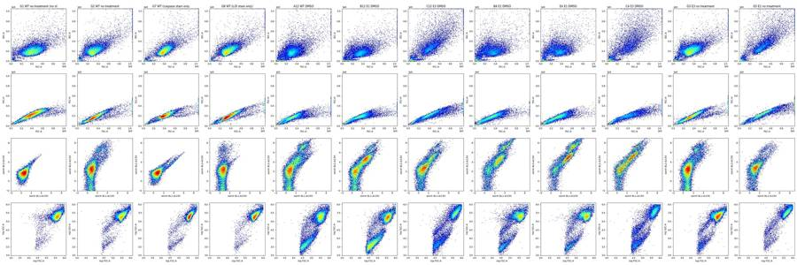
19
agent
Let me zoom into the fluorescence channels for the controls and a few test wells at higher resolution.
20
tool call · Bash
cd /task/work; cat > plot2.py <<'EOF'
import sys; sys.path.insert(0,'.')
from load import *
import matplotlib; matplotlib.use('Agg'); import matplotlib.pyplot as plt
wells = sys.argv[2].split(',')
out=sys.argv[1]
n=len(wells); nc=4; nr=int(np.ceil(n/nc))
fig,ax = plt.subplots(nr,nc,figsize=(5*nc,5*nr)); ax=np.atleast_2d(ax)
for j,w in enumerate(wells):
s,df = load(w)
m = (df['FSC-A']>100000)&(df['SSC-A']>50000)
a=ax.flat[j]
a.hist2d(asinh(df['BL1-A'][m]),asinh(df['BL2-A'][m]),bins=150,range=[[-2,9],[-2,9]],cmap='jet',norm=matplotlib.colors.LogNorm()); a.set_title(w+' '+lay.set_index('well').loc[w,'sample'][:26]+' '+lay.set_index('well').loc[w,'conditioned_media'][:7])
a.set_xlabel('asinh(BL1-A/150) caspase'); a.set_ylabel('asinh(BL2-A/150) AADvanced'); a.grid(alpha=.3)
plt.tight_layout(); plt.savefig(out,dpi=60)
EOF
python3 plot2.py p2.png G1,G7,G8,G2,A12,A9,B12,B9,B4,B1,C12,C121
tool output
(Bash completed with no output)
22
tool call · Read
{
"file_path": "/task/work/p2.png"
}23
tool output
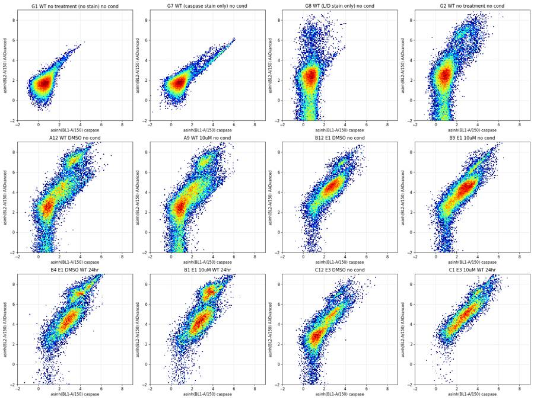
25
thinking
The stains are clear: the unstained control shows autofluorescence, the caspase-only well shows BL1 spilling into BL2, and the L/D-only well shows dead cells in BL2 with no spillover. Next I'll check acquisition stability across all wells before gating.
26
tool call · Bash
cd /task/work; cat > plot_time.py <<'EOF'
import sys; sys.path.insert(0,'.')
from load import *
import matplotlib; matplotlib.use('Agg'); import matplotlib.pyplot as plt
fig,ax = plt.subplots(7,12,figsize=(36,18))
stats=[]
for j,w in enumerate(lay.well):
s,df=load(w); t=df['Time'].values
a=ax.flat[j]
h,e=np.histogram(t,bins=34,range=(0,17))
a.plot(e[:-1],h,'k-'); a.set_title(w,fontsize=9); a.set_ylim(0,None)
a2=a.twinx();
# running median FSC
idx=np.digitize(t,e)
med=[np.median(df['FSC-A'].values[idx==k]) if (idx==k).sum()>5 else np.nan for k in range(1,35)]
a2.plot(e[:-1],med,'r-',alpha=.6); a2.set_ylim(0,6e5)
stats.append(dict(well=w,tmax=t.max(),first=h[:4].mean(),mid=h[4:30].mean(),last=h[30:].mean(),cv=h[2:32].std()/h[2:32].mean()))
for k in range(len(lay),84): ax.flat[k].axis('off')
plt.tight_layout(); plt.savefig('ptime.png',dpi=40)
print(pd.DataFrame(stats).round(3).to_string())
EOF
python3 plot_time.py27
tool output
well tmax first mid last cv 0 A1 15.980 938.25 1001.154 386.25 0.133 1 A2 16.706 1063.25 1243.385 897.00 0.134 2 A3 16.851 1268.75 1456.808 1096.25 0.134 3 A4 16.632 812.25 1037.538 713.50 0.144 4 A5 16.749 864.00 1091.346 783.00 0.159 5 A6 15.660 909.75 1101.154 290.50 0.197 6 A7 16.841 789.75 1152.885 827.75 0.150 7 A8 15.832 554.25 762.577 205.75 0.198 8 A9 16.671 1061.00 1251.846 810.50 0.141 9 A10 16.647 1071.75 1334.192 830.50 0.147 10 A11 16.621 1224.50 1348.769 852.50 0.079 11 A12 15.960 924.75 979.808 387.50 0.100 12 B1 16.702 480.75 599.538 311.50 0.134 13 B2 15.827 805.25 1068.462 369.00 0.174 14 B3 16.738 1062.75 1246.077 854.50 0.137 15 B4 15.884 530.00 658.654 180.00 0.235 16 B5 16.773 459.75 564.115 336.50 0.157 17 B6 16.655 900.75 1008.846 468.00 0.151 18 B7 15.885 925.75 1145.885 480.25 0.162 19 B8 16.718 734.00 813.654 532.75 0.101 20 B9 15.809 980.00 1104.038 446.50 0.146 21 B10 16.698 1093.50 1286.962 565.75 0.158 22 B11 16.829 1184.25 1288.885 689.25 0.103 23 B12 15.942 934.25 1007.000 440.25 0.119 24 C1 16.524 424.75 578.462 235.50 0.182 25 C2 16.788 628.00 805.346 501.00 0.163 26 C3 15.902 504.25 694.885 253.50 0.207 27 C4 16.821 447.00 565.923 402.75 0.188 28 C5 16.826 538.25 596.000 270.00 0.175 29 C6 16.470 620.50 702.115 244.75 0.194 30 C7 16.593 618.25 743.269 269.00 0.192 31 C8 16.603 522.50 595.000 261.00 0.172 32 C9 15.839 634.25 740.462 293.25 0.180 33 C10 16.533 472.00 505.231 192.50 0.209 34 C11 16.477 593.75 645.346 175.00 0.244 35 C12 16.726 667.75 712.000 480.25 0.163 36 D1 16.622 829.00 977.808 306.50 0.194 37 D2 16.821 992.75 1351.115 864.25 0.185 38 D3 15.944 1146.50 1438.038 684.00 0.148 39 D4 16.797 734.00 856.808 222.75 0.221 40 D5 16.767 736.00 896.808 521.75 0.182 41 D6 16.508 922.00 1059.692 257.00 0.206 42 D7 16.373 1056.00 1274.808 158.50 0.288 43 D8 16.813 729.00 876.538 520.25 0.176 44 D9 16.725 1074.00 1164.577 252.50 0.222 45 D10 16.159 1139.25 1220.692 532.50 0.104 46 D11 16.335 1264.25 1432.962 251.25 0.226 47 D12 16.766 776.00 911.423 549.50 0.199 48 E1 16.730 447.50 600.615 369.75 0.173 49 E2 16.504 999.25 1181.115 273.75 0.214 50 E3 16.094 1118.00 1324.231 82.25 0.272 51 E4 15.961 573.75 626.769 37.00 0.291 52 E5 16.600 511.50 596.962 320.75 0.173 53 E6 16.712 840.75 1004.269 717.00 0.113 54 E7 16.813 1015.50 1181.846 880.00 0.138 55 E8 15.873 475.25 507.038 155.50 0.162 56 E9 15.909 858.00 956.500 324.00 0.149 57 E10 16.778 1158.50 1266.192 1012.25 0.076 58 E11 16.688 1287.50 1325.192 945.50 0.109 59 E12 16.810 765.25 819.769 573.75 0.110 60 F1 16.692 295.50 362.962 248.75 0.155 61 F2 15.918 518.50 593.808 188.75 0.168 62 F3 15.941 534.75 634.846 226.50 0.171 63 F4 15.817 298.25 389.538 128.25 0.215 64 F5 16.700 388.25 434.500 295.25 0.155 65 F6 15.796 421.00 474.500 160.25 0.171 66 F7 16.718 557.75 598.962 393.00 0.071 67 F8 16.807 337.50 438.423 242.00 0.235 68 F9 15.911 479.50 532.192 202.75 0.166 69 F10 16.822 441.50 531.923 300.00 0.151 70 F11 16.614 482.50 588.269 385.75 0.172 71 F12 16.839 443.25 481.192 342.00 0.159 72 G1 16.634 564.75 854.269 435.00 0.183 73 G2 15.903 588.50 811.731 298.75 0.215 74 G3 16.805 761.75 1150.962 728.25 0.240 75 G4 16.596 956.50 1119.154 321.25 0.243 76 G5 16.420 474.75 510.115 199.75 0.218 77 G6 16.793 409.00 533.154 315.75 0.278 78 G7 16.317 676.00 759.346 393.00 0.163 79 G8 16.435 637.75 761.538 493.00 0.200
28
tool call · Read
{
"file_path": "/task/work/ptime.png"
}29
tool output
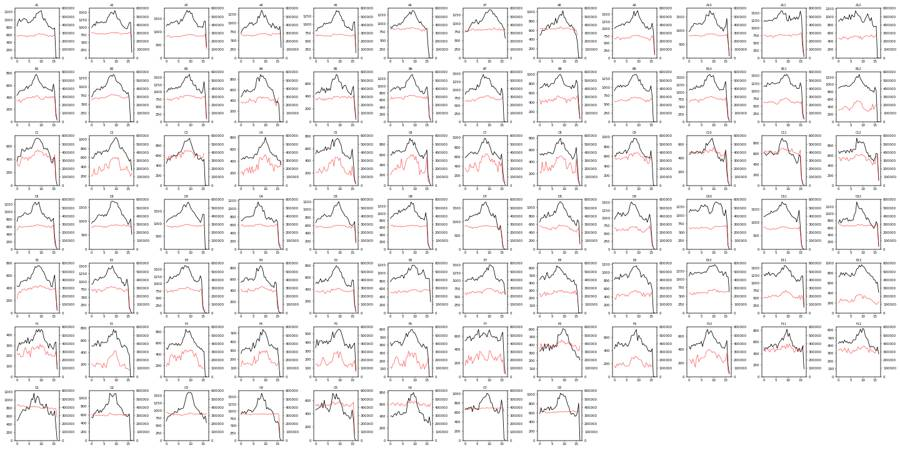
31
agent
Event rates are smooth in every well (the drop in the last bin is just the partial final bin at ~16 s) — no clog or ran-dry signatures. Now let me define the scatter gates on pooled data.
32
tool call · Bash
cd /task/work; cat > plot3.py <<'EOF'
import sys; sys.path.insert(0,'.')
from load import *
import matplotlib; matplotlib.use('Agg'); import matplotlib.pyplot as plt
rng=np.random.default_rng(0)
dfs=[]
for w in lay.well:
s,df=load(w); d=df.sample(n=min(5000,len(df)),random_state=0); d['well']=w; dfs.append(d)
P=pd.concat(dfs); P.to_pickle('pooled.pkl')
fig,ax=plt.subplots(2,3,figsize=(21,14))
L=matplotlib.colors.LogNorm()
ax[0,0].hist2d(P['FSC-A'],P['SSC-A'],bins=250,range=[[0,1.05e6],[0,1.05e6]],cmap='jet',norm=matplotlib.colors.LogNorm()); ax[0,0].set_xlabel('FSC-A'); ax[0,0].set_ylabel('SSC-A'); ax[0,0].grid(alpha=.4)
ax[0,1].hist2d(P['FSC-A'],P['FSC-H'],bins=250,range=[[0,1.05e6],[0,7e5]],cmap='jet',norm=matplotlib.colors.LogNorm()); ax[0,1].set_xlabel('FSC-A'); ax[0,1].set_ylabel('FSC-H'); ax[0,1].grid(alpha=.4)
ax[0,2].hist2d(P['FSC-A'],P['FSC-W'],bins=250,range=[[0,1.05e6],[0,1100]],cmap='jet',norm=matplotlib.colors.LogNorm()); ax[0,2].set_xlabel('FSC-A'); ax[0,2].set_ylabel('FSC-W'); ax[0,2].grid(alpha=.4)
# colour scatter by BL2
d=P.sample(60000,random_state=1)
sc=ax[1,0].scatter(d['FSC-A'],d['SSC-A'],c=asinh(d['BL2-A']),s=1,cmap='jet',vmin=1,vmax=8); plt.colorbar(sc,ax=ax[1,0]); ax[1,0].set_title('colour = asinh BL2 (SYTOX)'); ax[1,0].set_xlim(0,1.05e6); ax[1,0].set_ylim(0,1.05e6)
sc=ax[1,1].scatter(d['FSC-A'],d['SSC-A'],c=asinh(d['BL1-A']),s=1,cmap='jet',vmin=0,vmax=5); plt.colorbar(sc,ax=ax[1,1]); ax[1,1].set_title('colour = asinh BL1 (caspase)'); ax[1,1].set_xlim(0,1.05e6); ax[1,1].set_ylim(0,1.05e6)
ax[1,2].hist2d(P['SSC-A'],P['SSC-H'],bins=250,range=[[0,1.05e6],[0,1.05e6]],cmap='jet',norm=matplotlib.colors.LogNorm()); ax[1,2].set_xlabel('SSC-A'); ax[1,2].set_ylabel('SSC-H')
plt.tight_layout(); plt.savefig('p3.png',dpi=55)
EOF
python3 plot3.py33
tool output
(Bash completed with no output)
34
tool call · Read
{
"file_path": "/task/work/p3.png"
}35
tool output
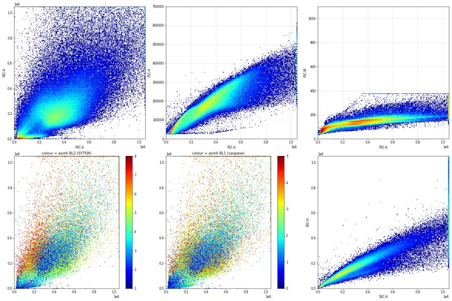
37
thinking
Debris sits below about 100k FSC, so the cell gate has to keep the dead-cell region at lower FSC and higher SSC. I'm viewing it on log axes to place the debris boundary.
38
tool call · Bash
cd /task/work; cat > plot4.py <<'EOF'
import sys; sys.path.insert(0,'.')
from load import *
import matplotlib; matplotlib.use('Agg'); import matplotlib.pyplot as plt
P=pd.read_pickle('pooled.pkl')
fig,ax=plt.subplots(1,3,figsize=(24,8))
lf=np.log10(np.clip(P['FSC-A'],1,None)); ls=np.log10(np.clip(P['SSC-A'],1,None))
ax[0].hist2d(lf,ls,bins=250,range=[[3.5,6.05],[2.5,6.05]],cmap='jet',norm=matplotlib.colors.LogNorm()); ax[0].grid(alpha=.5); ax[0].set_xlabel('log10 FSC-A'); ax[0].set_ylabel('log10 SSC-A')
d=P.sample(80000,random_state=1)
sc=ax[1].scatter(np.log10(np.clip(d['FSC-A'],1,None)),np.log10(np.clip(d['SSC-A'],1,None)),c=asinh(d['BL2-A']),s=1,cmap='jet',vmin=1,vmax=8); ax[1].set_xlim(3.5,6.05); ax[1].set_ylim(2.5,6.05); ax[1].grid(alpha=.5); plt.colorbar(sc,ax=ax[1])
ax[2].hist(lf,bins=300,range=(3.5,6.05),histtype='step'); ax[2].set_yscale('log'); ax[2].grid(alpha=.5)
plt.tight_layout(); plt.savefig('p4.png',dpi=55)
EOF
python3 plot4.py39
tool output
(Bash completed with no output)
40
tool call · Read
{
"file_path": "/task/work/p4.png"
}41
tool output
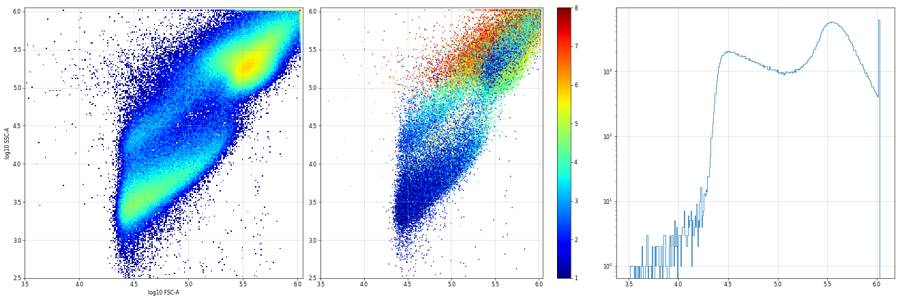
43
thinking
The debris cutoff is set at about 110k from the FSC-A histogram minimum. Next I'll estimate BL1↔BL2 spillover from the single-stain controls G7 and G8.
44
tool call · Bash
cd /task/work; cat > spill.py <<'EOF'
import sys; sys.path.insert(0,'.')
from load import *
def cellmask(df): return (df['FSC-A']>100000)&(df['FSC-A']<1040000)&(df['SSC-A']>40000)&(df['SSC-A']<1040000)&(df['FSC-H']/df['FSC-A']>0.42)
_,g1=load('G1'); _,g7=load('G7'); _,g8=load('G8')
for nm,d in [('G1',g1),('G7',g7),('G8',g8)]:
m=cellmask(d); print(nm, m.sum(), 'BL1 med', np.median(d['BL1-A'][m]), 'BL2 med', np.median(d['BL2-A'][m]))
m=cellmask(g7); d=g7[m]
neg1=np.median(g1['BL1-A'][cellmask(g1)]); neg2=np.median(g1['BL2-A'][cellmask(g1)])
for lo in [2000,5000,10000]:
p=d[(d['BL1-A']>lo)&(d['BL1-A']<900000)]
s=np.median((p['BL2-A']-neg2)/(p['BL1-A']-neg1))
A=np.vstack([p['BL1-A'],np.ones(len(p))]).T; coef=np.linalg.lstsq(A,p['BL2-A'],rcond=None)[0]
print('G7 BL1>',lo,'n',len(p),'median ratio BL2/BL1 (bg-sub)',round(s,3),'lsq slope',coef.round(3))
m=cellmask(g8); d=g8[m]
for lo in [10000,30000,100000]:
p=d[(d['BL2-A']>lo)&(d['BL2-A']<1000000)]
s=np.median((p['BL1-A']-neg1)/(p['BL2-A']-neg2))
print('G8 BL2>',lo,'n',len(p),'median BL1/BL2',round(s,4), 'BL1 med in pos', np.median(p['BL1-A']), 'vs neg', neg1)
EOF
python3 spill.py45
tool output
G1 23410 BL1 med 91.0 BL2 med 362.0 G7 20628 BL1 med 133.0 BL2 med 400.0 G8 21549 BL1 med 108.0 BL2 med 532.0 G7 BL1> 2000 n 482 median ratio BL2/BL1 (bg-sub) 0.886 lsq slope [ 0.861 479.938] G7 BL1> 5000 n 225 median ratio BL2/BL1 (bg-sub) 0.886 lsq slope [ 0.859 516.84 ] G7 BL1> 10000 n 52 median ratio BL2/BL1 (bg-sub) 0.895 lsq slope [8.250000e-01 1.038263e+03] G8 BL2> 10000 n 678 median BL1/BL2 0.0006 BL1 med in pos 119.5 vs neg 91.0 G8 BL2> 30000 n 429 median BL1/BL2 0.0005 BL1 med in pos 127.0 vs neg 91.0 G8 BL2> 100000 n 56 median BL1/BL2 0.0004 BL1 med in pos 138.0 vs neg 91.0
47
agent
Spillover BL1→BL2 ≈ 0.88 (huge, as expected with BL2 at 350 V), BL2→BL1 ≈ 0.0005 (negligible). I'll build a compensation matrix from these single stains and look at compensated data.
48
tool call · Bash
cd /task/work; cat >> load.py <<'EOF'
SPILL = np.array([[1.0, 0.88],[0.0005, 1.0]])
def comp(df):
X = df[['BL1-A','BL2-A']].values @ np.linalg.inv(SPILL)
d = df.copy(); d['cBL1']=X[:,0]; d['cBL2']=X[:,1]; return d
def cellmask(df): return (df['FSC-A']>100000)&(df['FSC-A']<1040000)&(df['SSC-A']>40000)&(df['SSC-A']<1040000)&(df['FSC-H']/df['FSC-A']>0.42)
EOF
cat > plot5.py <<'EOF'
import sys; sys.path.insert(0,'.')
from load import *
import matplotlib; matplotlib.use('Agg'); import matplotlib.pyplot as plt
wells = sys.argv[2].split(','); out=sys.argv[1]
n=len(wells); nc=6; nr=int(np.ceil(n/nc))
fig,ax = plt.subplots(nr,nc,figsize=(4.2*nc,4.2*nr)); ax=np.atleast_2d(ax)
for j,w in enumerate(wells):
s,df = load(w); d=comp(df); d=d[cellmask(d)]
a=ax.flat[j]
a.hist2d(asinh(d['cBL1']),asinh(d['cBL2']),bins=150,range=[[-2,9],[-2,9]],cmap='jet',norm=matplotlib.colors.LogNorm())
r=lay.set_index('well').loc[w]; a.set_title(f"{w} {r['sample'][:18]} {r.conditioned_media[:7]}",fontsize=9); a.grid(alpha=.3)
for k in range(n,nr*nc): ax.flat[k].axis('off')
plt.tight_layout(); plt.savefig(out,dpi=50)
EOF
python3 plot5.py p5.png G1,G7,G8,G2,G3,G4,G5,G6,A12,A9,A4,A1,B12,B9,B4,B1,B8,B5,C12,C9,C4,C1,C8,C549
tool output
(Bash completed with no output)
50
tool call · Read
{
"file_path": "/task/work/p5.png"
}51
tool output
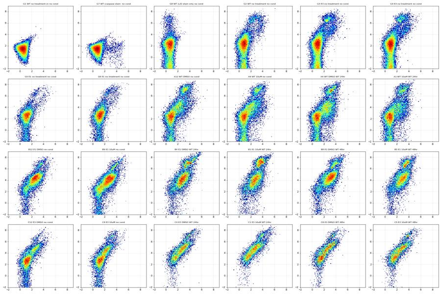
53
thinking
Compensation worked, and caspase-positive events now sit at negative BL2. Two findings: caspase-positive cells are also dim for SYTOX, and the "E3 no treatment" wells look like WT, which suggests the G3/G4 and G5/G6 labels may be swapped. I'm testing that with live caspase-negative scatter features next.
54
tool call · Bash
cd /task/work; cat > lineid.py <<'EOF'
import sys; sys.path.insert(0,'.')
from load import *
rows=[]
for w in lay.well:
s,df=load(w); d=comp(df); m=cellmask(d)
allc=d[m]
lv=d[m&(asinh(d['cBL2'])<3.2)&(asinh(d['cBL1'])<1.8)]
rows.append(dict(well=w, line=lay.set_index('well').loc[w,'cell_line'], cm=lay.set_index('well').loc[w,'conditioned_media'][:7], cpt=lay.set_index('well').loc[w,'camptothecin'],
n_cells=m.sum(), pct_cells=100*m.mean(), fsc=np.median(lv['FSC-A']), ssc=np.median(lv['SSC-A']), ssc_fsc=np.median(lv['SSC-A']/lv['FSC-A']),
hA=np.median(lv['FSC-H']/lv['FSC-A']), sscW=np.median(lv['SSC-W']), fscW=np.median(lv['FSC-W']),
bl1=np.median(lv['BL1-A']), bl2=np.median(lv['cBL2']), sat=100*((df['SSC-A']>=1048000)|(df['FSC-A']>=1048000)).mean(),
pct_negpop=100*len(lv)/m.sum()))
R=pd.DataFrame(rows); pd.set_option('display.width',250)
print(R.round(3).to_string())
R.to_csv('lineid.csv',index=False)
print(R[R.well.str[0]!='G'].groupby(['line']).agg({'fsc':['mean','std'],'ssc':['mean','std'],'ssc_fsc':['mean','std'],'hA':['mean','std'],'sscW':['mean','std'],'fscW':['mean','std'],'sat':['mean','std']}).round(3))
EOF
python3 lineid.py55
tool output
well line cm cpt n_cells pct_cells fsc ssc ssc_fsc hA sscW fscW bl1 bl2 sat pct_negpop 0 A1 WT WT 24hr 10uM 18068 57.674 331424.0 192941.0 0.562 0.533 128.0 134.0 129.0 420.025 1.184 57.787 1 A2 WT WT 24hr 5uM 25070 62.411 324834.0 203685.0 0.609 0.542 127.0 137.0 130.0 423.386 0.946 61.998 2 A3 WT WT 24hr 2uM 27815 58.760 302987.0 205134.0 0.654 0.534 127.0 133.0 131.0 425.147 0.761 60.913 3 A4 WT WT 24hr DMSO 20686 62.535 317213.0 189374.0 0.580 0.544 126.0 136.0 138.0 387.571 1.439 51.151 4 A5 WT WT 48hr 10uM 21895 62.623 307291.5 197088.5 0.611 0.534 127.0 132.0 135.0 373.504 1.101 57.940 5 A6 WT WT 48hr 5uM 22495 67.288 393455.5 204525.5 0.510 0.566 127.0 148.0 136.0 754.072 1.478 53.968 6 A7 WT WT 48hr 2uM 24835 68.144 381221.0 204949.0 0.529 0.552 128.0 149.0 134.0 713.894 1.133 55.905 7 A8 WT WT 48hr DMSO 15336 67.066 407919.0 198587.0 0.482 0.565 127.0 148.0 138.0 746.008 1.981 50.789 8 A9 WT no cond 10uM 21269 53.127 316105.0 187083.0 0.572 0.538 127.0 133.0 139.5 370.383 1.219 56.627 9 A10 WT no cond 5uM 25457 60.185 317874.0 197755.0 0.592 0.526 128.0 133.0 137.0 334.667 1.199 60.671 10 A11 WT no cond 2uM 25511 58.814 322678.5 198663.0 0.583 0.528 128.0 134.0 137.0 351.955 1.173 60.311 11 A12 WT no cond DMSO 16480 53.639 317643.5 192648.0 0.586 0.546 127.0 132.0 139.0 434.571 1.289 54.357 12 B1 E1 WT 24hr 10uM 12292 65.533 348896.0 178986.0 0.496 0.563 126.0 140.0 199.0 513.786 0.570 10.958 13 B2 E1 WT 24hr 5uM 20296 62.493 343988.0 188409.0 0.527 0.556 127.0 142.0 189.0 500.060 0.416 18.422 14 B3 E1 WT 24hr 2uM 23692 59.131 343641.5 183061.0 0.524 0.564 126.0 143.0 199.0 598.884 0.309 14.326 15 B4 E1 WT 24hr DMSO 11462 57.410 366843.0 178780.5 0.481 0.561 126.0 144.0 200.5 490.276 1.227 12.808 16 B5 E1 WT 48hr 10uM 12490 69.964 347221.5 173366.5 0.476 0.561 126.0 139.0 195.5 508.824 0.263 11.625 17 B6 E1 WT 48hr 5uM 19937 62.883 343214.0 184822.0 0.526 0.550 127.0 142.0 193.0 548.441 0.407 15.785 18 B7 E1 WT 48hr 2uM 21612 61.022 352525.0 191428.0 0.528 0.552 127.0 141.0 211.5 618.872 0.381 13.733 19 B8 E1 WT 48hr DMSO 14308 54.565 360990.0 171308.5 0.464 0.565 126.0 146.0 191.0 530.053 0.591 13.153 20 B9 E1 no cond 10uM 19146 55.639 326181.5 183423.0 0.534 0.551 126.0 140.0 195.0 502.341 0.648 28.956 21 B10 E1 no cond 5uM 22255 55.502 324451.0 188614.0 0.551 0.551 126.0 141.0 195.0 497.659 0.678 29.814 22 B11 E1 no cond 2uM 21296 51.935 331054.5 172205.5 0.495 0.559 126.0 139.0 200.0 562.287 0.485 22.690 23 B12 E1 no cond DMSO 13355 42.156 353150.5 183034.5 0.502 0.566 127.0 140.0 190.0 590.560 0.773 20.891 24 C1 E3 WT 24hr 10uM 7991 45.195 440773.5 276812.5 0.612 0.544 132.0 150.0 230.0 1159.970 5.135 14.917 25 C2 E3 WT 24hr 5uM 9816 38.562 383980.5 302924.5 0.773 0.567 131.0 143.0 253.0 998.139 4.172 19.356 26 C3 E3 WT 24hr 2uM 10041 47.592 407937.5 291114.0 0.694 0.555 130.0 148.0 223.0 1188.663 5.356 19.878 27 C4 E3 WT 24hr DMSO 7046 38.900 377930.0 278903.0 0.732 0.570 129.0 148.0 237.0 955.420 4.627 19.004 28 C5 E3 WT 48hr 10uM 7056 37.674 401358.5 315043.5 0.773 0.560 131.0 148.0 251.0 969.527 4.629 22.676 29 C6 E3 WT 48hr 5uM 8441 38.870 392046.0 308695.0 0.780 0.565 131.0 147.0 252.0 997.399 4.333 20.246 30 C7 E3 WT 48hr 2uM 9629 42.096 379590.0 311590.0 0.805 0.568 130.0 145.0 243.0 1033.735 4.092 26.514 31 C8 E3 WT 48hr DMSO 7262 39.035 413115.0 310900.5 0.731 0.558 132.0 148.0 245.0 980.852 4.177 24.594 32 C9 E3 no cond 10uM 11314 49.273 436592.0 284630.0 0.638 0.545 133.0 150.0 201.0 712.393 5.435 51.220 33 C10 E3 no cond 5uM 8658 54.818 446195.0 300877.0 0.655 0.537 135.0 150.0 208.0 720.797 6.338 63.675 34 C11 E3 no cond 2uM 11638 58.618 455440.5 316982.0 0.681 0.519 137.0 145.0 209.0 683.021 7.565 65.991 35 C12 E3 no cond DMSO 11544 49.965 432447.0 286148.0 0.648 0.541 134.0 147.0 198.0 677.778 4.372 58.792 36 D1 WT WT 24hr 10uM 17925 59.820 324249.0 197553.0 0.587 0.544 127.0 136.0 150.0 400.576 1.108 52.285 37 D2 WT WT 24hr 5uM 25998 61.090 319332.0 221489.0 0.669 0.533 128.0 133.0 151.0 391.412 1.015 60.024 38 D3 WT WT 24hr 2uM 26761 59.853 320493.5 222727.5 0.669 0.528 128.0 133.0 154.0 402.857 0.785 57.292 39 D4 WT WT 24hr DMSO 15540 59.531 330068.0 200415.0 0.584 0.547 127.0 139.0 148.0 423.786 2.080 47.394 40 D5 WT WT 48hr 10uM 16972 59.870 318921.0 210759.0 0.635 0.542 127.0 137.0 152.0 511.005 1.372 56.057 41 D6 WT WT 48hr 5uM … [5,920 more characters not shown]
57
thinking
The scatter fingerprints put G5/G6 with E3 rather than E1 and G3/G4 with WT/E1, so those labels look swapped or wrong. Next I'm setting the SYTOX and caspase thresholds from the 1D histograms.
58
tool call · Bash
cd /task/work; cat > plot6.py <<'EOF'
import sys; sys.path.insert(0,'.')
from load import *
import matplotlib; matplotlib.use('Agg'); import matplotlib.pyplot as plt
def sing(d): return cellmask(d)
fig,ax=plt.subplots(2,2,figsize=(18,12))
sets={'controls':['G1','G7','G8','G2'],'WT':['A12','A9','A4','D12'],'E1':['B12','B9','B4','E12'],'E3':['C12','C9','C4','F12']}
for k,(nm,ws) in enumerate(sets.items()):
pass
for w,c in zip(['G1','G7','G8','G2','A12','B12','C12','B4','C4'],['k','g','r','b','c','m','y','purple','orange']):
s,df=load(w); d=comp(df); d=d[sing(d)]
ax[0,0].hist(asinh(d['cBL2']),bins=200,range=(-3,9),histtype='step',color=c,label=w,density=True)
ax[0,1].hist(asinh(d['cBL1']),bins=200,range=(-3,9),histtype='step',color=c,label=w,density=True)
ax[1,0].hist(asinh(d['cBL2']),bins=200,range=(-3,9),histtype='step',color=c,label=w,density=True);
ax[1,1].hist(asinh(d['cBL1']),bins=200,range=(-3,9),histtype='step',color=c,label=w,density=True)
ax[1,0].set_yscale('log'); ax[1,1].set_yscale('log')
for a in ax.flat: a.legend(); a.grid(alpha=.4)
ax[0,0].set_title('asinh(compBL2/150) SYTOX'); ax[0,1].set_title('asinh(compBL1/150) caspase')
plt.tight_layout(); plt.savefig('p6.png',dpi=55)
for w in ['G1','G7','G8','G2']:
s,df=load(w); d=comp(df); d=d[sing(d)]
print(w, 'cBL1 pctiles 50/99/99.5/99.9', np.percentile(d['cBL1'],[50,99,99.5,99.9]).round(0), 'cBL2', np.percentile(d['cBL2'],[50,99,99.5,99.9]).round(0))
EOF
python3 plot6.py59
tool output
G1 cBL1 pctiles 50/99/99.5/99.9 [ 91. 343. 406. 732.] cBL2 [ 291. 1304. 1632. 2745.] G7 cBL1 pctiles 50/99/99.5/99.9 [ 133. 5357. 7858. 11686.] cBL2 [ 285. 1235. 1508. 2500.] G8 cBL1 pctiles 50/99/99.5/99.9 [107. 391. 474. 759.] cBL2 [ 439. 58572. 81175. 144339.] G2 cBL1 pctiles 50/99/99.5/99.9 [ 153. 3375. 4280. 6727.] cBL2 [ 581. 92655. 109252. 170757.]
60
tool call · Read
{
"file_path": "/task/work/p6.png"
}61
tool output
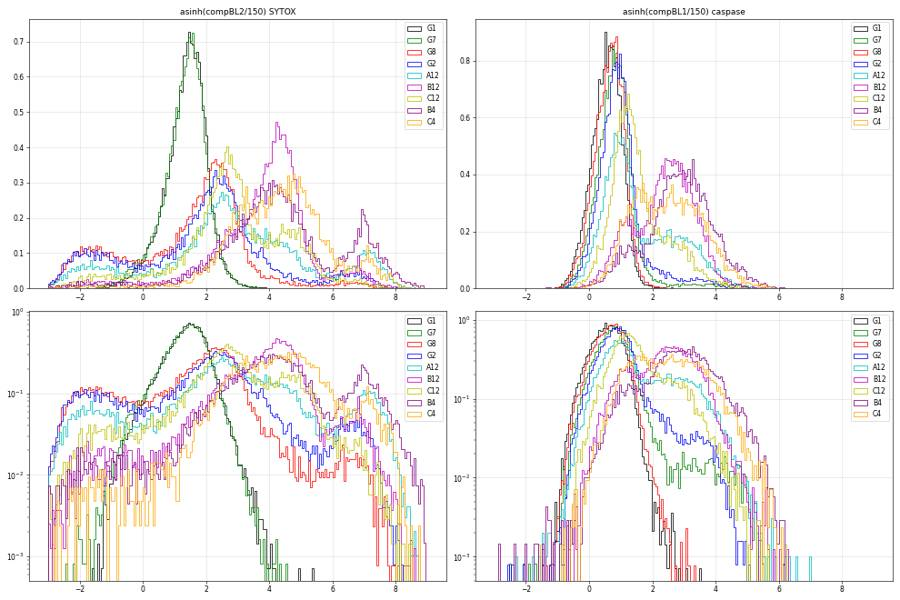
63
thinking
SYTOX-stained wells show a live peak, a dim apoptotic shoulder, and a bright dead bump with a valley near asinh 5.8. The negative-BL2 events appear only in SYTOX wells and are dye-excluding live cells. I'm checking the FlowKit API for compensation matrices and gates next.
64
tool call · Bash
cd /task/work; python3 -c "
import flowkit as fk, inspect
print(fk.__version__)
print(inspect.signature(fk.Matrix.__init__))
print(inspect.signature(fk.GatingStrategy.add_gate))
print(inspect.signature(fk.GatingStrategy.add_comp_matrix))
print(inspect.signature(fk.Dimension.__init__))
print(inspect.signature(fk.gates.RectangleGate.__init__))
print(inspect.signature(fk.gates.PolygonGate.__init__))
print(inspect.signature(fk.transforms.LogicleTransform.__init__))
print([m for m in dir(fk.GatingStrategy) if not m.startswith('_')])
print([m for m in dir(fk.GatingResults) if not m.startswith('_')])
"65
tool output (error)
Exit code 1 Traceback (most recent call last): File "<string>", line 12, in <module> AttributeError: module 'flowkit' has no attribute 'GatingResults' 1.2.3 (self, spill_data_or_file, detectors, fluorochromes=None, null_channels=None) (self, gate, gate_path, sample_id=None) (self, matrix_id, matrix) (self, dimension_id, compensation_ref='uncompensated', transformation_ref=None, range_min=None, range_max=None) (self, gate_name, dimensions, use_complement=False) (self, gate_name, dimensions, vertices, use_complement=False) (self, param_t, param_w, param_m, param_a) ['add_comp_matrix', 'add_gate', 'add_transform', 'clear_cache', 'export_gate_hierarchy_image', 'find_matching_gate_paths', 'gate_sample', 'get_child_gate_ids', 'get_comp_matrix', 'get_gate', 'get_gate_hierarchy', 'get_gate_ids', 'get_max_depth', 'get_parent_gate_id', 'get_root_gates', 'get_transform', 'is_custom_gate', 'remove_gate', 'rename_gate', 'resolver']
67
agent
FlowKit 1.2.3 uses `add_comp_matrix(id, Matrix)` and gate paths like `('root','cells')`. Now let me design the singlet gate from the FSC-A/FSC-H relationship.
68
tool call · Bash
cd /task/work; cat > plot7.py <<'EOF'
import sys; sys.path.insert(0,'.')
from load import *
import matplotlib; matplotlib.use('Agg'); import matplotlib.pyplot as plt
P=pd.read_pickle('pooled.pkl')
c=(P['FSC-A']>100000)&(P['FSC-A']<1040000)&(P['SSC-A']>40000)&(P['SSC-A']<1040000)
Q=P[c]
fig,ax=plt.subplots(1,3,figsize=(24,8))
ax[0].hist2d(Q['FSC-A'],Q['FSC-H'],bins=250,range=[[0,1.05e6],[0,6e5]],cmap='jet',norm=matplotlib.colors.LogNorm()); ax[0].grid(alpha=.5)
x=np.linspace(0,1.05e6,10)
for r in [0.40,0.42,0.45,0.75]: ax[0].plot(x,r*x,'k--',lw=1)
ax[1].hist(Q['FSC-H']/Q['FSC-A'],bins=300,range=(0.1,1.0),histtype='step'); ax[1].grid(alpha=.5); ax[1].set_yscale('log')
ax[2].hist2d(Q['FSC-A'],Q['FSC-H']/Q['FSC-A'],bins=250,range=[[0,1.05e6],[0.1,1]],cmap='jet',norm=matplotlib.colors.LogNorm()); ax[2].grid(alpha=.5)
plt.tight_layout(); plt.savefig('p7.png',dpi=55)
for line in ['WT','E1','E3']:
ws=lay[lay.cell_line==line].well
q=Q[Q.well.isin(ws)]; r=q['FSC-H']/q['FSC-A']; print(line, np.percentile(r,[1,5,10,25,50,75,95,99]).round(3))
EOF
python3 plot7.py69
tool output
WT [0.28 0.369 0.422 0.479 0.528 0.575 0.661 0.777] E1 [0.275 0.354 0.403 0.471 0.532 0.584 0.671 0.775] E3 [0.281 0.347 0.385 0.45 0.512 0.562 0.668 0.822]
70
tool call · Read
{
"file_path": "/task/work/p7.png"
}71
tool output
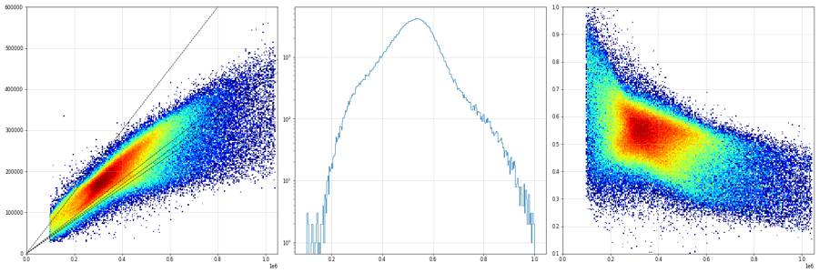
73
thinking
The FSC-H/FSC-A ratio drifts with size, so I'm gating on a polygon around the main band. Building the full FlowKit gating chain next.
74
tool call · Bash
cd /task/work; cat > build_gates.py <<'EOF'
import flowkit as fk, numpy as np, sys
# thresholds (compensated linear units)
LIVE_MAX = float(sys.argv[1]) if len(sys.argv)>1 else 25000.0
CASP_MIN = float(sys.argv[2]) if len(sys.argv)>2 else 600.0
OUT = sys.argv[3] if len(sys.argv)>3 else '/task/outputs/gates.xml'
def build():
g = fk.GatingStrategy()
# spillover from single stains G7 (CellEvent only, WT) and G8 (SYTOX AADvanced only, WT)
spill = np.array([[1.0, 0.88],[0.0005, 1.0]])
m = fk.Matrix(spill, ['BL1-A','BL2-A'], fluorochromes=['CellEvent_Casp37','SYTOX_AADvanced'])
g.add_comp_matrix('spill_G7G8', m)
# 1 cells: FSC-A vs SSC-A, exclude debris (FSC-A<1e5 / low SSC) and off-scale events
cells = fk.gates.PolygonGate('cells',
[fk.Dimension('FSC-A', compensation_ref='uncompensated'), fk.Dimension('SSC-A', compensation_ref='uncompensated')],
[(100000,40000),(100000,700000),(380000,1040000),(1040000,1040000),(1040000,60000),(300000,60000)])
g.add_gate(cells, ('root',))
# 2 singlets: FSC-A vs FSC-H main band
sing = fk.gates.PolygonGate('singlets',
[fk.Dimension('FSC-A', compensation_ref='uncompensated'), fk.Dimension('FSC-H', compensation_ref='uncompensated')],
[(100000,40000),(100000,130000),(1040000,700000),(1040000,360000),(600000,235000),(300000,125000)])
g.add_gate(sing, ('root','cells'))
# 3 live: SYTOX AADvanced (BL2, compensated) below dim/bright valley
live = fk.gates.RectangleGate('live', [fk.Dimension('BL2-A', compensation_ref='spill_G7G8', range_min=None, range_max=LIVE_MAX)])
g.add_gate(live, ('root','cells','singlets'))
# 4 casp_pos: CellEvent caspase-3/7 (BL1, compensated) above FMO threshold, within live
cp = fk.gates.RectangleGate('casp_pos', [fk.Dimension('BL1-A', compensation_ref='spill_G7G8', range_min=CASP_MIN, range_max=None)])
g.add_gate(cp, ('root','cells','singlets','live'))
# other: dead (SYTOX bright) and total caspase+ within singlets
dead = fk.gates.RectangleGate('dead', [fk.Dimension('BL2-A', compensation_ref='spill_G7G8', range_min=LIVE_MAX, range_max=None)])
g.add_gate(dead, ('root','cells','singlets'))
cpa = fk.gates.RectangleGate('casp_pos_all', [fk.Dimension('BL1-A', compensation_ref='spill_G7G8', range_min=CASP_MIN, range_max=None)])
g.add_gate(cpa, ('root','cells','singlets'))
return g
g = build()
with open(OUT,'wb') as fh: fk.export_gatingml(g, fh)
g2 = fk.parse_gating_xml(OUT)
print('reloaded gates:', g2.get_gate_ids())
EOF
python3 build_gates.py 25000 600 /task/work/gates_test.xml75
tool output
reloaded gates: [('cells', ('root',)), ('singlets', ('root', 'cells')), ('live', ('root', 'cells', 'singlets')), ('casp_pos', ('root', 'cells', 'singlets', 'live')), ('dead', ('root', 'cells', 'singlets')), ('casp_pos_all', ('root', 'cells', 'singlets'))]77
agent
Strategy exports and reloads. Now let me gate all 80 files with the reloaded XML and cross-check one well against a NumPy reimplementation.
78
tool call · Bash
cd /task/work; cat > count.py <<'EOF'
import flowkit as fk, pandas as pd, numpy as np, sys
GX = sys.argv[1]; OUT = sys.argv[2]
lay = pd.read_csv('/task/inputs/plate_layout.csv')
g = fk.parse_gating_xml(GX)
order = [('cells','all_events','cells'),('singlets','cells','singlets'),('live','singlets','live'),('casp_pos','live','marker_positive'),('dead','singlets','other'),('casp_pos_all','singlets','other')]
rows=[]
for _,r in lay.iterrows():
s = fk.Sample('/task/inputs/raw/'+r.file)
res = g.gate_sample(s)
rep = res.report
cnt = {'all_events': s.event_count}
for _,x in rep.iterrows(): cnt[x['gate_name']] = int(x['count'])
rows.append(dict(file=r.file, well=r.well, population='all_events', role='other', parent='none', count=s.event_count, pct_of_parent=''))
for pop,par,role in order:
c=cnt[pop]; pc=cnt[par]
rows.append(dict(file=r.file, well=r.well, population=pop, role=role, parent=par, count=c, pct_of_parent=round(100*c/pc,4) if pc>0 else ''))
pd.DataFrame(rows).to_csv(OUT, index=False)
print('wrote', OUT, len(rows))
EOF
python3 count.py /task/work/gates_test.xml /task/work/counts_test.csv && python3 - <<'EOF'
import sys; sys.path.insert(0,'/task/work')
from load import *
import pandas as pd
c=pd.read_csv('/task/work/counts_test.csv')
print(c[c.well.isin(['A12','B12'])].to_string())
# numpy cross-check for A12
from matplotlib.path import Path
s,df=load('A12'); d=comp(df)
pc=Path([(100000,40000),(100000,700000),(380000,1040000),(1040000,1040000),(1040000,60000),(300000,60000)])
ps=Path([(100000,40000),(100000,130000),(1040000,700000),(1040000,360000),(600000,235000),(300000,125000)])
m1=pc.contains_points(d[['FSC-A','SSC-A']].values); m2=m1&ps.contains_points(d[['FSC-A','FSC-H']].values)
m3=m2&(d.cBL2<25000); m4=m3&(d.cBL1>=600)
print('numpy A12', m1.sum(), m2.sum(), m3.sum(), m4.sum())
EOF79
tool output
wrote /task/work/counts_test.csv 560
file well population role parent count pct_of_parent
77 Caspase-assay-2-mlk_caspase_Group_A12.fcs A12 all_events other none 30724 NaN
78 Caspase-assay-2-mlk_caspase_Group_A12.fcs A12 cells cells all_events 18980 61.7758
79 Caspase-assay-2-mlk_caspase_Group_A12.fcs A12 singlets singlets cells 16906 89.0727
80 Caspase-assay-2-mlk_caspase_Group_A12.fcs A12 live live singlets 14583 86.2593
81 Caspase-assay-2-mlk_caspase_Group_A12.fcs A12 casp_pos marker_positive live 3245 22.2519
82 Caspase-assay-2-mlk_caspase_Group_A12.fcs A12 dead other singlets 2323 13.7407
83 Caspase-assay-2-mlk_caspase_Group_A12.fcs A12 casp_pos_all other singlets 5535 32.7399
161 Caspase-assay-2-mlk_caspase_Group_B12.fcs B12 all_events other none 31680 NaN
162 Caspase-assay-2-mlk_caspase_Group_B12.fcs B12 cells cells all_events 16005 50.5208
163 Caspase-assay-2-mlk_caspase_Group_B12.fcs B12 singlets singlets cells 13988 87.3977
164 Caspase-assay-2-mlk_caspase_Group_B12.fcs B12 live live singlets 12971 92.7295
165 Caspase-assay-2-mlk_caspase_Group_B12.fcs B12 casp_pos marker_positive live 8160 62.9096
166 Caspase-assay-2-mlk_caspase_Group_B12.fcs B12 dead other singlets 1017 7.2705
167 Caspase-assay-2-mlk_caspase_Group_B12.fcs B12 casp_pos_all other singlets 9175 65.5919
numpy A12 18980 16906 14583 324581
agent
FlowKit counts match the independent NumPy gating exactly (18980/16906/14583/3245 for A12), confirming the compensation direction. Now gate-overlay plots across lines to check placement.
82
tool call · Bash
cd /task/work; cat > plot_gates.py <<'EOF'
import sys; sys.path.insert(0,'.')
from load import *
import matplotlib; matplotlib.use('Agg'); import matplotlib.pyplot as plt
from matplotlib.path import Path
LIVE=float(sys.argv[1]); CASP=float(sys.argv[2]); wells=sys.argv[3].split(','); out=sys.argv[4]
PC=[(100000,40000),(100000,700000),(380000,1040000),(1040000,1040000),(1040000,60000),(300000,60000)]
PS=[(100000,40000),(100000,130000),(1040000,700000),(1040000,360000),(600000,235000),(300000,125000)]
fig,ax=plt.subplots(len(wells),3,figsize=(15,4.6*len(wells)))
for i,w in enumerate(wells):
s,df=load(w); d=comp(df)
m1=Path(PC).contains_points(d[['FSC-A','SSC-A']].values); m2=m1&Path(PS).contains_points(d[['FSC-A','FSC-H']].values)
r=lay.set_index('well').loc[w]
a=ax[i,0]; a.hist2d(d['FSC-A'],d['SSC-A'],bins=200,range=[[0,1.05e6],[0,1.05e6]],cmap='jet',norm=matplotlib.colors.LogNorm()); a.plot(*zip(*(PC+[PC[0]])),'k-',lw=2); a.set_title(f'{w} {r["sample"][:20]} {r.conditioned_media[:7]} cells {100*m1.mean():.0f}%',fontsize=9)
a=ax[i,1]; dd=d[m1]; a.hist2d(dd['FSC-A'],dd['FSC-H'],bins=200,range=[[0,1.05e6],[0,7e5]],cmap='jet',norm=matplotlib.colors.LogNorm()); a.plot(*zip(*(PS+[PS[0]])),'k-',lw=2); a.set_title(f'singlets {100*m2.sum()/m1.sum():.0f}% of cells',fontsize=9)
a=ax[i,2]; dd=d[m2]; a.hist2d(asinh(dd['cBL1']),asinh(dd['cBL2']),bins=150,range=[[-2,8],[-3,9]],cmap='jet',norm=matplotlib.colors.LogNorm())
a.axhline(asinh(LIVE),color='k',lw=2); a.plot([asinh(CASP)]*2,[-3,asinh(LIVE)],'r-',lw=2)
live=dd.cBL2<LIVE; cp=live&(dd.cBL1>=CASP)
a.set_title(f'live {100*live.mean():.1f}% | casp+ of live {100*cp.sum()/live.sum():.1f}%',fontsize=9); a.set_xlabel('asinh(comp BL1/150) CellEvent'); a.set_ylabel('asinh(comp BL2/150) SYTOX AADv')
plt.tight_layout(); plt.savefig(out,dpi=45)
EOF
python3 plot_gates.py 25000 600 G1,G2,G8,A12,A9,A1,B12,B1,E5,C12,C1,F8 pg1.png83
tool output
(Bash completed with no output)
84
tool call · Read
{
"file_path": "/task/work/pg1.png"
}85
tool output
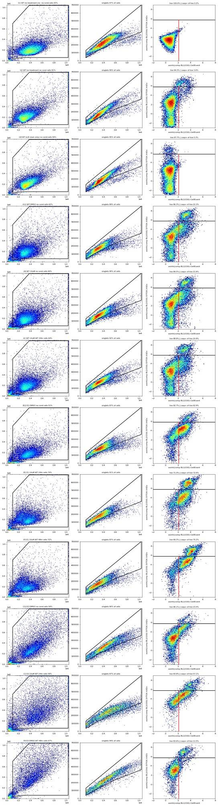
87
agent
Gates sit sensibly across WT, E1 and E3. Let me now tabulate the per-well read-out (% caspase+ of live singlets) by line × conditioned media × camptothecin.
88
tool call · Bash
cd /task/work; cat > tab.py <<'EOF'
import pandas as pd, numpy as np, sys
c=pd.read_csv(sys.argv[1]); lay=pd.read_csv('/task/inputs/plate_layout.csv')
w=c.pivot(index='well',columns='population',values='count')
w['pct_casp_live']=100*w.casp_pos/w.live; w['pct_dead']=100*w.dead/w.singlets; w['pct_casp_all']=100*w.casp_pos_all/w.singlets
w=w.join(lay.set_index('well')[['cell_line','camptothecin','conditioned_media']])
w['cm']=w.conditioned_media.str.replace(' conditioned media','').str.replace('no','none')
w['row']=w.index.str[0]; w['col']=w.index.str[1:].astype(int)
pd.set_option('display.width',250)
ab=w[w.row!='G']
for met in ['pct_casp_live','pct_dead','pct_casp_all','live']:
print('\n==',met)
print(ab.pivot_table(index=['cell_line','row'],columns='col',values=met).round(1).to_string())
print(w[w.row=='G'][['cell_line','camptothecin','singlets','live','pct_casp_live','pct_dead','pct_casp_all']].round(2))
w.to_csv('perwell.csv')
EOF
python3 tab.py counts_test.csv89
tool output
== pct_casp_live
col 1 2 3 4 5 6 7 8 9 10 11 12
cell_line row
E1 B 72.9 72.0 77.1 72.4 73.6 73.2 75.5 76.2 57.4 58.5 66.1 62.9
E 73.3 77.9 78.6 81.0 75.2 76.7 77.9 78.4 64.1 60.1 69.7 54.0
E3 C 57.1 59.1 49.5 57.1 50.4 53.9 46.3 47.3 24.7 17.2 15.3 23.4
F 44.4 55.1 45.2 54.5 46.0 50.7 45.5 11.5 32.9 22.9 14.9 15.3
WT A 20.9 23.8 24.1 31.5 25.4 23.9 22.7 25.0 21.6 19.5 20.8 22.3
D 35.1 27.1 29.9 36.7 26.5 25.8 24.1 31.7 28.7 21.6 21.5 9.3
== pct_dead
col 1 2 3 4 5 6 7 8 9 10 11 12
cell_line row
E1 B 29.0 14.3 15.9 23.7 23.0 15.5 18.4 14.6 6.6 3.8 6.6 7.3
E 18.8 15.4 17.8 30.7 30.7 20.3 14.1 21.6 10.9 7.9 6.2 11.5
E3 C 16.2 13.7 13.2 15.2 13.2 11.9 8.9 13.4 6.0 4.0 3.4 3.9
F 22.7 23.2 22.1 29.8 21.2 23.9 25.1 16.4 13.8 11.4 13.4 9.8
WT A 11.2 8.4 9.3 12.1 10.1 8.9 9.9 12.6 10.5 12.0 12.8 13.7
D 10.1 8.2 9.3 15.2 11.8 8.5 11.1 18.4 12.1 12.2 13.0 10.2
== pct_casp_all
col 1 2 3 4 5 6 7 8 9 10 11 12
cell_line row
E1 B 80.7 76.0 80.7 78.9 79.6 77.3 79.9 79.7 60.2 60.1 68.3 65.6
E 78.3 81.3 82.4 86.8 82.8 81.5 81.0 83.1 68.0 63.3 71.6 59.3
E3 C 64.0 64.6 56.1 63.6 57.0 59.4 51.0 54.4 29.1 20.4 18.0 26.3
F 57.0 65.4 57.2 68.0 57.4 62.4 59.1 25.5 42.2 31.6 26.2 23.5
WT A 29.2 29.6 30.3 39.5 32.5 30.3 30.0 34.2 29.6 28.8 30.6 32.7
D 41.6 33.0 36.3 46.2 35.1 32.0 32.3 44.2 37.3 31.0 31.7 18.3
== live
col 1 2 3 4 5 6 7 8 9 10 11 12
cell_line row
E1 B 9038.0 17949.0 20586.0 9068.0 9881.0 17417.0 18114.0 12759.0 18416.0 22052.0 20359.0 12971.0
E 9572.0 18578.0 19223.0 8007.0 8143.0 16160.0 19237.0 7052.0 13305.0 20727.0 20250.0 10629.0
E3 C 7548.0 9344.0 9607.0 6648.0 6757.0 8217.0 9495.0 6965.0 11467.0 9000.0 11820.0 11817.0
F 4461.0 5705.0 7040.0 3549.0 4565.0 4601.0 6412.0 7261.0 5418.0 6639.0 9595.0 8450.0
WT A 16463.0 23552.0 25638.0 18625.0 20121.0 20970.0 22806.0 13755.0 19465.0 22851.0 22597.0 14583.0
D 16433.0 24264.0 24582.0 13536.0 15286.0 18383.0 21445.0 12557.0 16309.0 20771.0 22793.0 19266.0
cell_line camptothecin singlets ... pct_casp_live pct_dead pct_casp_all
well ...
G1 WT no treatment 23744 ... 0.23 0.00 0.23
G2 WT no treatment 21352 ... 3.62 5.70 7.92
G3 E3 no treatment 29980 ... 5.58 6.56 11.34
G4 E3 no treatment 28502 ... 5.81 6.54 11.61
G5 E1 no treatment 11630 ... 7.61 3.04 10.24
G6 E1 no treatment 12455 ... 6.90 5.40 11.51
G7 WT not stated 21275 ... 4.55 0.00 4.55
G8 WT not stated 21887 ... 0.30 2.27 0.30
[8 rows x 7 columns]91
thinking
Camptothecin shows no dose response in any line, so the positive control failed, and conditioned media raises caspase+ in the KO lines while WT barely moves. I'm checking the outliers F8 and D12 and the saturated events next.
92
tool call · Bash
cd /task/work; cat > qc2.py <<'EOF'
import sys; sys.path.insert(0,'.')
from load import *
from matplotlib.path import Path
PC=[(100000,40000),(100000,700000),(380000,1040000),(1040000,1040000),(1040000,60000),(300000,60000)]
rows=[]
for w in lay.well:
s,df=load(w); d=comp(df)
sat=(d['FSC-A']>=1040000)|(d['SSC-A']>=1040000)
big=(d['FSC-A']>100000)
ds=d[sat]; dn=d[big&~sat]
rows.append(dict(well=w, line=lay.set_index('well').loc[w,'cell_line'], pct_sat=100*sat.mean(), n_sat=sat.sum(),
sat_casp=100*(ds.cBL1>=600).mean(), sat_dead=100*(ds.cBL2>=25000).mean(), nonsat_casp=100*(dn.cBL1>=600).mean(), nonsat_dead=100*(dn.cBL2>=25000).mean()))
R=pd.DataFrame(rows); pd.set_option('display.width',200)
print(R.round(1).to_string())
EOF
python3 qc2.py93
tool output
well line pct_sat n_sat sat_casp sat_dead nonsat_casp nonsat_dead 0 A1 WT 1.2 377 92.6 69.5 30.3 11.5 1 A2 WT 1.0 387 95.9 55.6 31.7 8.7 2 A3 WT 0.8 371 95.7 46.6 32.1 8.9 3 A4 WT 1.5 485 97.3 72.6 40.9 13.1 4 A5 WT 1.1 394 92.9 60.7 34.0 10.8 5 A6 WT 1.5 509 86.6 54.0 31.5 8.7 6 A7 WT 1.1 419 88.5 45.3 31.6 9.5 7 A8 WT 2.0 466 91.2 70.4 35.3 13.4 8 A9 WT 1.2 496 90.3 54.6 30.1 10.3 9 A10 WT 1.2 513 89.1 52.8 30.3 11.8 10 A11 WT 1.2 515 92.2 56.5 32.1 12.2 11 A12 WT 1.3 401 96.8 69.1 34.1 14.3 12 B1 E1 0.6 112 97.3 83.0 79.4 29.3 13 B2 E1 0.4 140 95.7 57.9 74.1 14.0 14 B3 E1 0.3 124 97.6 58.1 78.0 15.3 15 B4 E1 1.2 249 98.8 94.8 77.6 26.0 16 B5 E1 0.3 49 87.8 59.2 79.0 23.7 17 B6 E1 0.4 137 94.9 59.9 75.2 15.3 18 B7 E1 0.4 138 95.7 61.6 77.2 17.8 19 B8 E1 0.6 156 98.1 76.9 77.0 15.7 20 B9 E1 0.7 232 98.3 65.1 57.6 7.1 21 B10 E1 0.7 279 99.3 61.6 58.0 4.3 22 B11 E1 0.5 200 98.0 55.5 64.1 6.2 23 B12 E1 0.8 253 98.0 62.8 60.2 7.4 24 C1 E3 5.2 924 98.1 62.4 63.4 17.3 25 C2 E3 4.2 1078 99.2 64.7 63.5 14.8 26 C3 E3 5.5 1164 97.3 57.7 57.4 14.5 27 C4 E3 4.7 853 99.1 77.5 64.1 17.0 28 C5 E3 4.7 883 98.5 71.0 58.8 15.9 29 C6 E3 4.4 961 98.6 63.5 60.4 14.1 30 C7 E3 4.2 964 98.7 55.7 53.8 10.9 31 C8 E3 4.3 795 98.5 66.4 56.4 15.5 32 C9 E3 5.6 1278 95.1 40.3 31.1 7.2 33 C10 E3 6.5 1023 93.0 30.3 23.2 5.3 34 C11 E3 7.7 1526 83.5 22.7 21.4 4.8 35 C12 E3 4.4 1027 92.8 38.1 29.4 5.3 36 D1 WT 1.1 338 96.4 66.3 43.2 10.8 37 D2 WT 1.1 447 95.5 66.9 36.0 8.9 38 D3 WT 0.8 360 97.2 53.1 39.5 9.2 39 D4 WT 2.1 547 97.6 87.8 48.4 17.2 40 D5 WT 1.4 391 97.2 71.6 37.2 12.9 41 D6 WT 1.4 448 95.3 70.8 35.4 9.2 42 D7 WT 0.9 326 94.8 60.4 35.3 11.2 43 D8 WT 1.6 437 95.4 75.7 46.9 20.2 44 D9 WT 1.7 612 93.0 60.6 38.3 12.2 45 D10 WT 1.2 445 95.3 58.0 32.8 12.2 46 D11 WT 0.9 400 94.5 58.5 33.7 12.5 47 D12 WT 1.9 541 94.6 76.5 20.9 11.5 48 E1 E1 0.6 118 97.5 77.1 77.3 19.2 49 E2 E1 0.5 166 97.0 76.5 79.8 15.4 50 E3 E1 0.4 166 98.8 73.5 80.8 17.6 51 E4 E1 1.2 225 99.6 93.3 85.6 32.8 52 E5 E1 0.9 163 98.8 88.3 82.1 32.6 53 E6 E1 0.4 133 99.2 77.4 79.8 19.8 54 E7 E1 0.4 143 97.2 76.2 79.0 14.0 55 E8 E1 1.5 239 99.6 95.8 82.0 26.0 56 E9 E1 1.2 349 98.9 80.2 64.6 11.8 57 E10 E1 0.7 311 99.7 76.2 62.3 8.4 58 E11 E1 0.5 221 100.0 73.3 69.0 6.2 59 E12 E1 1.1 289 96.9 84.8 57.5 12.7 60 F1 E3 4.8 560 97.5 73.8 56.5 22.8 61 F2 E3 3.7 683 99.6 69.5 63.7 22.9 62 F3 E3 3.8 740 98.4 65.7 58.4 22.9 63 F4 E3 5.0 595 99.5 83.9 66.4 30.3 64 F5 E3 4.0 557 98.7 72.9 57.7 22.9 65 F6 E3 3.7 546 99.3 73.4 62.0 25.1 66 F7 E3 4.0 777 98.3 68.6 60.9 26.8 67 F8 E3 9.7 1325 93.0 46.7 28.6 19.0 68 F9 E3 6.5 1072 96.4 63.4 42.5 16.2 69 F10 E3 7.5 1253 93.2 52.2 34.1 13.3 70 F11 E3 7.3 1365 89.2 47.0 28.6 14.8 71 F12 E3 5.2 808 86.4 45.2 26.4 11.7 72 G1 WT 2.0 531 49.0 0.0 0.3 0.0 73 G2 WT 2.5 607 84.3 53.0 9.1 6.5 74 G3 E3 1.3 455 85.9 58.5 12.9 7.4 75 G4 E3 1.2 415 84.8 55.4 13.1 7.3 76 G5 E1 7.7 1230 87.2 23.5 13.0 4.6 77 G6 E1 9.4 1578 81.7 24.8 13.8 7.0 78 G7 WT 1.5 365 89.0 0.0 5.9 0.0 … [74 more characters not shown]
95
thinking
Scatter-saturated events skew E3 caspase+ fractions downward, and F8 looks like an E3 no-CM well on every independent axis. Next I'll run a quantitative line-identity check on G3–G6.
96
tool call · Bash
cd /task/work; cat > ident.py <<'EOF'
import sys; sys.path.insert(0,'.')
from load import *
from matplotlib.path import Path
PC=[(100000,40000),(100000,700000),(380000,1040000),(1040000,1040000),(1040000,60000),(300000,60000)]
PS=[(100000,40000),(100000,130000),(1040000,700000),(1040000,360000),(600000,235000),(300000,125000)]
feats=[]
for w in lay.well:
s,df=load(w); d=comp(df)
m=Path(PC).contains_points(d[['FSC-A','SSC-A']].values)&Path(PS).contains_points(d[['FSC-A','FSC-H']].values)
q=d[m&(d.cBL2<25000)&(d.cBL1<600)] # live caspase-negative singlets
f=dict(well=w)
for ch in ['FSC-A','SSC-A','SSC-W','FSC-W']:
for p in [25,50,75]: f[f'{ch}_{p}']=np.percentile(q[ch],p)
f['ssc_fsc']=np.median(q['SSC-A']/q['FSC-A']); f['sscH_A']=np.median(q['SSC-H']/q['SSC-A'])
f['pct_sat']=100*((df['FSC-A']>=1040000)|(df['SSC-A']>=1040000)).mean()
feats.append(f)
F=pd.DataFrame(feats).set_index('well'); F=F.join(lay.set_index('well')[['cell_line']])
ref=F[~F.index.str.startswith('G')]
X=F.drop(columns='cell_line'); mu=X[~X.index.str.startswith('G')].mean(); sd=X[~X.index.str.startswith('G')].std()
Z=(X-mu)/sd
cent=Z[~Z.index.str.startswith('G')].groupby(F.cell_line).mean()
# leave-one-out accuracy of nearest centroid on rows A-F
acc=[]
for w in ref.index:
cc=Z[~Z.index.str.startswith('G')].drop(w).groupby(F.cell_line.drop(w)).mean()
pred=((cc-Z.loc[w])**2).sum(1).idxmin(); acc.append(pred==F.loc[w,'cell_line'])
print('LOO nearest-centroid accuracy on rows A-F:', np.mean(acc), 'n', len(acc), 'misclassified:', [w for w,a in zip(ref.index,acc) if not a])
for w in ['G1','G2','G3','G4','G5','G6','G7','G8']:
dist=((cent-Z.loc[w])**2).sum(1)**.5
print(w, F.loc[w,'cell_line'], 'dist to centroid:', dist.round(2).to_dict(), '-> nearest', dist.idxmin())
print(F.groupby('cell_line')[['FSC-A_50','SSC-A_50','SSC-W_50','ssc_fsc','pct_sat']].agg(['mean','min','max']).round(2).T)
print(F.loc[['G1','G2','G3','G4','G5','G6','G7','G8'],['FSC-A_50','SSC-A_50','SSC-W_50','ssc_fsc','pct_sat']].round(2))
EOF
python3 ident.py97
tool output
LOO nearest-centroid accuracy on rows A-F: 0.8333333333333334 n 72 misclassified: ['A4', 'A6', 'A7', 'A8', 'C4', 'E1', 'E2', 'E3', 'E6', 'E7', 'E10', 'E12']
G1 WT dist to centroid: {'E1': 4.99, 'E3': 5.14, 'WT': 4.68} -> nearest WT
G2 WT dist to centroid: {'E1': 3.25, 'E3': 6.87, 'WT': 2.09} -> nearest WT
G3 E3 dist to centroid: {'E1': 2.95, 'E3': 6.54, 'WT': 1.64} -> nearest WT
G4 E3 dist to centroid: {'E1': 2.53, 'E3': 6.32, 'WT': 1.21} -> nearest WT
G5 E1 dist to centroid: {'E1': 9.85, 'E3': 3.43, 'WT': 8.76} -> nearest E3
G6 E1 dist to centroid: {'E1': 10.06, 'E3': 3.57, 'WT': 8.87} -> nearest E3
G7 WT dist to centroid: {'E1': 7.98, 'E3': 6.67, 'WT': 7.69} -> nearest E3
G8 WT dist to centroid: {'E1': 3.65, 'E3': 4.79, 'WT': 2.6} -> nearest WT
cell_line E1 E3 WT
FSC-A_50 mean 335402.06 409246.96 332887.39
min 290769.00 334870.50 304619.00
max 461013.00 471827.00 406093.00
SSC-A_50 mean 193977.15 308885.48 204801.98
min 169131.00 202448.00 185679.50
max 314851.50 409175.00 231321.00
SSC-W_50 mean 126.38 133.04 128.04
min 122.00 129.00 126.00
max 136.00 138.00 131.00
ssc_fsc mean 0.57 0.75 0.60
min 0.51 0.58 0.50
max 0.67 0.87 0.72
pct_sat mean 1.29 4.96 1.39
min 0.27 1.21 0.78
max 9.41 9.66 2.46
FSC-A_50 SSC-A_50 SSC-W_50 ssc_fsc pct_sat
well
G1 403859.5 201479.0 129.0 0.50 2.03
G2 316694.5 204371.0 129.0 0.62 2.46
G3 334870.5 203556.5 129.0 0.59 1.27
G4 336826.0 202448.0 129.0 0.58 1.21
G5 459807.5 312539.5 136.0 0.67 7.71
G6 461013.0 314851.5 136.0 0.67 9.41
G7 390927.5 198578.0 131.0 0.51 1.52
G8 347966.5 204363.5 130.0 0.57 1.6999
thinking
G5 and G6 match the E3 centroid, while G3 and G4 sit far from E3 and can't be pinned to WT or E1. Next I'll check whether the conclusions hold across the caspase/SYTOX thresholds, the alternative metric, and off-scale events.
100
tool call · Bash
cd /task/work; cat > sens.py <<'EOF'
import sys; sys.path.insert(0,'.')
from load import *
from matplotlib.path import Path
PC=[(100000,40000),(100000,700000),(380000,1040000),(1040000,1040000),(1040000,60000),(300000,60000)]
PCx=[(100000,40000),(100000,700000),(380000,1100000),(1100000,1100000),(1100000,60000),(300000,60000)]
PS=[(100000,40000),(100000,130000),(1040000,700000),(1040000,360000),(600000,235000),(300000,125000)]
PSx=[(100000,40000),(100000,130000),(1100000,740000),(1100000,370000),(600000,235000),(300000,125000)]
L=lay.set_index('well'); excl={'F8','G3','G4','G5','G6'}
res=[]
for w in lay.well:
if not w[0] in 'ABCDEF' or w in excl: continue
s,df=load(w); d=comp(df)
sg=Path(PC).contains_points(d[['FSC-A','SSC-A']].values)&Path(PS).contains_points(d[['FSC-A','FSC-H']].values)
sgx=Path(PCx).contains_points(d[['FSC-A','SSC-A']].values)&Path(PSx).contains_points(d[['FSC-A','FSC-H']].values)
r=dict(well=w,line=L.loc[w,'cell_line'],cm='none' if L.loc[w,'conditioned_media'].startswith('no') else 'CM')
for lv in [10000,25000,60000]:
for cp in [400,600,1000]:
live=sg&(d.cBL2<lv); r[f'L{lv//1000}k_C{cp}']=100*(live&(d.cBL1>=cp)).sum()/live.sum()
r['all_C600']=100*(sg&(d.cBL1>=600)).sum()/sg.sum()
livex=sgx&(d.cBL2<25000); r['offscale_incl']=100*(livex&(d.cBL1>=600)).sum()/livex.sum()
res.append(r)
R=pd.DataFrame(res)
G=R.groupby(['line','cm']).mean(numeric_only=True).T
out=pd.DataFrame({'WT_none':G[('WT','none')],'WT_CMdiff':G[('WT','CM')]-G[('WT','none')],
'E1_none':G[('E1','none')],'E1_CMdiff':G[('E1','CM')]-G[('E1','none')],
'E3_none':G[('E3','none')],'E3_CMdiff':G[('E3','CM')]-G[('E3','none')]})
print(out.round(1).to_string())
EOF
python3 sens.py101
tool output
WT_none WT_CMdiff E1_none E1_CMdiff E3_none E3_CMdiff L10k_C400 22.3 4.1 64.9 10.8 27.2 25.4 L10k_C600 16.8 4.9 56.5 12.5 13.8 19.3 L10k_C1000 10.8 4.9 40.7 14.6 5.1 11.6 L25k_C400 26.2 5.6 69.2 12.1 33.6 31.9 L25k_C600 20.7 6.5 61.6 14.1 20.8 30.0 L25k_C1000 14.2 6.5 46.8 16.6 11.2 25.2 L60k_C400 29.3 5.2 70.6 12.4 36.3 32.7 L60k_C600 24.0 6.0 63.3 14.6 24.0 31.7 L60k_C1000 17.3 6.0 49.1 17.5 14.3 28.3 all_C600 30.0 4.8 64.5 16.1 27.2 32.6 offscale_incl 21.0 6.4 61.7 14.1 24.2 27.7
103
thinking
CM raises caspase+ in E1 and E3 across all nine threshold combinations, versus only a small rise in WT. I'm visually checking F8 and D12 against their replicates before setting flags.
104
tool call · Bash
cd /task/work; python3 plot_gates.py 25000 600 C8,F8,F12,A12,D12,G2 pg2.png
105
tool output
(Bash completed with no output)
106
tool call · Read
{
"file_path": "/task/work/pg2.png"
}107
tool output
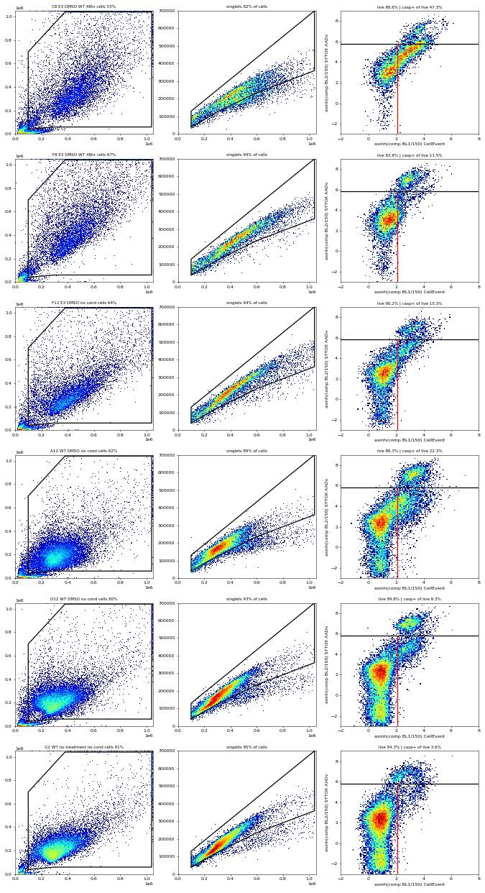
109
thinking
F8 looks like a no-conditioned-media well, unlike its replicate C8, so I'll exclude it. D12 is a low outlier with no matching treatment class, so I'll keep it with a note and report the sensitivity; writing the final gates.xml and counts.csv now.
110
tool call · Bash
cd /task/work; python3 build_gates.py 25000 600 /task/outputs/gates.xml && python3 count.py /task/outputs/gates.xml /task/outputs/counts.csv && python3 - <<'EOF'
import pandas as pd
c=pd.read_csv('/task/outputs/counts.csv')
print(c.head(8).to_string()); print(c.population.value_counts().to_dict()); print(c.groupby('role').population.unique())
t=pd.read_csv('/task/work/counts_test.csv'); print('identical to test run:', (t['count'].values==c['count'].values).all())
w=c.pivot(index='well',columns='population',values='count'); print('min live', w.live.min(), w.live.idxmin()); print((100*w.singlets/w.cells).describe().round(1))
EOF111
tool output
reloaded gates: [('cells', ('root',)), ('singlets', ('root', 'cells')), ('live', ('root', 'cells', 'singlets')), ('casp_pos', ('root', 'cells', 'singlets', 'live')), ('dead', ('root', 'cells', 'singlets')), ('casp_pos_all', ('root', 'cells', 'singlets'))]
wrote /task/outputs/counts.csv 560
file well population role parent count pct_of_parent
0 Caspase-assay-2-mlk_caspase_Group_A1.fcs A1 all_events other none 31328 NaN
1 Caspase-assay-2-mlk_caspase_Group_A1.fcs A1 cells cells all_events 20093 64.1375
2 Caspase-assay-2-mlk_caspase_Group_A1.fcs A1 singlets singlets cells 18540 92.2709
3 Caspase-assay-2-mlk_caspase_Group_A1.fcs A1 live live singlets 16463 88.7972
4 Caspase-assay-2-mlk_caspase_Group_A1.fcs A1 casp_pos marker_positive live 3441 20.9014
5 Caspase-assay-2-mlk_caspase_Group_A1.fcs A1 dead other singlets 2077 11.2028
6 Caspase-assay-2-mlk_caspase_Group_A1.fcs A1 casp_pos_all other singlets 5411 29.1855
7 Caspase-assay-2-mlk_caspase_Group_A2.fcs A2 all_events other none 40169 NaN
{'all_events': 80, 'cells': 80, 'singlets': 80, 'live': 80, 'casp_pos': 80, 'dead': 80, 'casp_pos_all': 80}
role
cells [cells]
live [live]
marker_positive [casp_pos]
other [all_events, dead, casp_pos_all]
singlets [singlets]
Name: population, dtype: object
identical to test run: True
min live 3549 F4
count 80.0
mean 90.5
std 3.3
min 81.6
25% 88.8
50% 91.2
75% 92.4
max 97.2
dtype: float64113
agent
Final `gates.xml` and `counts.csv` are written (560 rows, identical to the validated test run). Before making the figure, let me load the dataviz skill as required.
114
tool call · Skill
{
"skill": "dataviz"
}115
tool output
Launching skill: dataviz
116
tool call · Bash
cd /tmp/claude-0/bundled-skills/2.1.322/afc0c67fcc822ac5f8f2f0af1dda7795/dataviz; sed -n 1,200p references/palette.md | head -120; echo ----; grep -n -i -A3 "dot\|strip" references/choosing-a-form.md | head -40
117
tool output
# Reference palette
This is the **reference instance** of the data-viz method: every parameter the
method needs, filled in with a validated default palette. The rest of the skill
is system-agnostic - **to target your brand, substitute this file's values** and
re-run the validator. Nothing else changes.
## How to use these values
Everything below is plain hex. In an HTML chart, **define the slots you use as
CSS custom properties in a local `<style>` block** at the top of the file, then
reference them by role throughout - so the light/dark values swap in one place,
and the chart body is written against roles rather than raw hex:
```css
.viz-root {
color-scheme: light;
--surface-1: #fcfcfb; /* chart surface */
--text-primary: #0b0b0b;
--text-secondary: #52514e;
--series-1: #2a78d6; /* categorical slot 1 */
/* ...only the roles this chart uses */
}
@media (prefers-color-scheme: dark) {
:root:where(:not([data-theme="light"])) .viz-root {
color-scheme: dark;
--surface-1: #1a1a19;
--text-primary: #f0efec;
--text-secondary: #c3c2b7;
--series-1: #3987e5;
}
}
:root[data-theme="dark"] .viz-root {
color-scheme: dark;
--surface-1: #1a1a19;
--text-primary: #f0efec;
--text-secondary: #c3c2b7;
--series-1: #3987e5;
}
```
Declare the dark values under both scopes as above - the media query covers
the OS setting; the `data-theme` scope covers the viewer's theme toggle,
which must win both ways (the `:not(...)` guard lets a light stamp beat
OS-dark; `:where()` keeps the media block below the toggle scope).
## Categorical palette
Both modes are selected. The dark column is the same eight hues stepped for the
dark surface, not a separate palette:
| Slot | Hue | Light | Dark |
|------|-----|-------|------|
| 1 | blue | `#2a78d6` | `#3987e5` |
| 2 | orange | `#eb6834` | `#d95926` |
| 3 | aqua | `#1baf7a` | `#199e70` |
| 4 | yellow | `#eda100` | `#c98500` |
| 5 | magenta | `#e87ba4` | `#d55181` |
| 6 | green | `#008300` | `#008300` |
| 7 | violet | `#6250d6` | `#9085e9` |
| 8 | red | `#e34948` | `#e66767` |
This order passes every hard gate in both modes on the default *adjacent*
pairlist (stacks, bars, lines): worst adjacent CVD Delta E 9.1 light / 8.4 dark
(OKLab ×100, >=8 target), worst adjacent normal-vision Delta E 19.6 light / 19.3
dark (>=15 floor). Under `--pairs all` (scatter, bubble, choropleth, small
multiples) the full eight cannot clear the floors - with all 28 pairs in
play no ordering can (the pairlist no longer depends on order), and
re-stepping is off the table by the documented-palette rule - so those
chart forms carry a series cap: **the first three slots validate all-pairs
in both modes** (worst pair CVD Delta E 9.2 light / 9.4 dark, normal-vision 24.0
light / 20.9 dark - clear of the CVD warn band). Past three, fold to "Other" or
facet: the fourth slot puts yellow and orange on screen
together, and that pair fails the all-pairs floors (normal-vision 13.7
light; CVD 4.8 dark). Three light-mode slots (magenta, yellow, aqua)
sit below 3:1 contrast on the light surface: the **relief rule** applies (ship
visible direct labels or the table view). The dark steps were chosen for the
dark band (OKLCH L ~ 0.48-0.67, >= 3:1 on the dark surface) and validated as a
set. (Ordering history: adopted July 2026 for its more harmonious opening -
the same eight hues and steps as its predecessor, re-ordered, zero hex
changes. The predecessor validated its first FOUR slots all-pairs, with its
dark run in the 6-8 CVD warn band, so secondary encoding was required there;
this order deliberately trades that fourth slot - yellow now sits beside orange -
for better-looking leading colors. Revisit the trade if yellow<->orange
confusion shows up in real charts with four or more series; undoing it is a
pure re-order. Light slot 7 has since been lightened, `#4a3aa7` -> `#6250d6`
(August 2026); the adjacent-pair figures above are unchanged by that move, the
non-adjacent blue<->violet pair now sits below both floors under `--pairs all`
(normal-vision 10.5, CVD 4.5 - inside the range the series cap already
excludes), and the order enumeration was run with the earlier value.) When you
swap in your own ramps, hold your palette to the full gate.
The slot **ordering** is the CVD-safety mechanism, not cosmetic - candidate
orderings were enumerated and only those clearing every adjacent gate in both
modes kept (see `color-formula.md` § Themes); this default is one of the
passing orders, picked among them for its opening colors. When you swap in
your brand's hues, do the same: run the validator on candidate orderings and
choose only among the passing ones.
## Sequential hue
Default single hue: **blue**, light->dark. When two sequential contexts appear at
once, the second takes the next categorical slot's hue (orange), each as its own
one-hue ramp.
| step | hex | step | hex | step | hex | step | hex |
|---|---|---|---|---|---|---|---|
| 100 | `#cde2fb` | 250 | `#86b6ef` | 400 | `#3987e5` | 550 | `#1c5cab` |
| 150 | `#b7d3f6` | 300 | `#6da7ec` | 450 | `#2a78d6` | 600 | `#184f95` |
| 200 | `#9ec5f4` | 350 | `#5598e7` | 500 | `#256abf` | 650 | `#104281` |
| | | | | | | 700 | `#0d366b` |
The full 100->700 range is for **sequential** encoding (continuous magnitude -
heatmaps, choropleths) where the lightest step means "near zero" and is allowed
to recede toward the surface. For an **ordinal** ramp (discrete ordered marks -
funnel stages, tiers - validated with `--ordinal`), the step nearest the surface
must still clear 2:1: on light, start no lighter than **step 250** (`#86b6ef`,
2.06:1); on dark, go no darker than **step 600** (`#184f95`, 2.15:1).
## Diverging pair
----
Shell cwd was reset to /task119
thinking
I'm plotting the three media conditions as a dot plot with group mean bars, using the first three validated categorical slots and marker shapes as a secondary encoding. Running the validator next.
120
tool call · Bash
cd /tmp/claude-0/bundled-skills/2.1.322/afc0c67fcc822ac5f8f2f0af1dda7795/dataviz && node scripts/validate_palette.js "#2a78d6,#eb6834,#1baf7a" --mode light --pairs all 2>&1 | tail -25
121
tool output
/bin/bash: line 1: node: command not found Shell cwd was reset to /task
123
thinking
Node isn't installed, so I can't run the validator, but the palette reference says slots 1–3 pass CVD checks; since aqua falls below 3:1 contrast, I'm adding direct labels and distinct marker shapes next.
124
tool call · Bash
cd /task/work; cat > analyse.py <<'EOF'
import pandas as pd, numpy as np
from scipy import stats
c=pd.read_csv('/task/outputs/counts.csv'); lay=pd.read_csv('/task/inputs/plate_layout.csv').set_index('well')
w=c.pivot(index='well',columns='population',values='count')
w['casp']=100*w.casp_pos/w.live; w['dead']=100*w.dead/w.singlets; w['casp_all']=100*w.casp_pos_all/w.singlets
w=w.join(lay[['cell_line','camptothecin','conditioned_media','sample']])
w['cm']=w.conditioned_media.map({'WT 24hr conditioned media':'CM24','WT 48hr conditioned media':'CM48','no conditioned media':'noCM'})
w['dose']=w.camptothecin.map({'10uM':'CPT10','5uM':'CPT5','2uM':'CPT2','DMSO':'DMSO'})
w['row']=w.index.str[0]; w['col']=w.index.str[1:].astype(int)
EXCL=['F8','G3','G4','G5','G6']
w['used']=~w.index.isin(EXCL)
w.to_csv('perwell_final.csv')
order=lambda ws: sorted(ws,key=lambda x:(x[0],int(x[1:])))
METRIC='% CellEvent caspase-3/7-positive cells among live singlets = 100 x count(casp_pos: compensated BL1-A >= 600) / count(live: compensated BL2-A SYTOX AADvanced < 25000, within cells>singlets); unit: % of parent'
CPTNOTE='; pooled over camptothecin 10/5/2 uM and DMSO (no dose effect detected)'
rows=[]
def add(name, sel, extra='', norm='none'):
d=w[sel & w.used]
v=d.casp.values
rows.append(dict(condition=name, wells=';'.join(order(d.index)), n_wells_used=len(v), mean=round(v.mean(),3), sd=round(v.std(ddof=1),3) if len(v)>1 else '', metric_definition=METRIC+extra, normalisation_applied=norm))
AF=w.row.isin(list('ABCDEF'))
lab={'noCM':'no conditioned media','CM24':'WT 24hr conditioned media','CM48':'WT 48hr conditioned media'}
for line in ['WT','E1','E3']:
for cm in ['noCM','CM24','CM48']:
add(f'{line}_{cm}', AF&(w.cell_line==line)&(w.cm==cm), CPTNOTE)
add(f'{line}_CMany', AF&(w.cell_line==line)&(w.cm.isin(['CM24','CM48'])), CPTNOTE+'; 24hr and 48hr conditioned media pooled')
for line in ['WT','E1','E3']:
for cm in ['noCM','CM24','CM48']:
for dose in ['CPT10','CPT5','CPT2','DMSO']:
add(f'{line}_{cm}_{dose}', AF&(w.cell_line==line)&(w.cm==cm)&(w.dose==dose))
add('WT_untreated_stained', w.index=='G2', '; row-G well, no camptothecin/DMSO, no medium exchange stated')
add('WT_unstained_control', w.index=='G1', '; unstained control, gates applied as for all wells (false-positive rate of the gate)')
add('WT_caspase_only_control', w.index=='G7', '; CellEvent-only single stain (compensation control)')
add('WT_SYTOX_only_control', w.index=='G8', '; SYTOX AADvanced-only single stain (caspase FMO)')
S=pd.DataFrame(rows); S.to_csv('/task/outputs/condition_summary.csv',index=False)
print(S[['condition','wells','n_wells_used','mean','sd']].head(13).to_string())
# comparisons
def comp(a,b,metric='casp'):
A=w.loc[S.set_index('condition').loc[a,'wells'].split(';'),metric]; B=w.loc[S.set_index('condition').loc[b,'wells'].split(';'),metric]
t=stats.ttest_ind(B,A,equal_var=False); diff=B.mean()-A.mean()
se=np.sqrt(B.var()/len(B)+A.var()/len(A));
dfw=(B.var()/len(B)+A.var()/len(A))**2/((B.var()/len(B))**2/(len(B)-1)+(A.var()/len(A))**2/(len(A)-1))
ci=stats.t.ppf(.975,dfw)*se
mw=stats.mannwhitneyu(B,A)
ov = 'no overlap' if (B.min()>A.max() or B.max()<A.min()) else 'overlap'
return dict(a=a,b=b,metric=metric,mean_a=A.mean(),mean_b=B.mean(),diff=diff,ci_lo=diff-ci,ci_hi=diff+ci,welch_p=t.pvalue,mw_p=mw.pvalue,nA=len(A),nB=len(B),ranges=f'{A.min():.1f}-{A.max():.1f} vs {B.min():.1f}-{B.max():.1f}',ov=ov)
C=[]
pairs=[('WT_noCM','E1_noCM'),('WT_noCM','E3_noCM'),('E1_noCM','E1_CM24'),('E1_noCM','E1_CM48'),('E1_noCM','E1_CMany'),('E3_noCM','E3_CM24'),('E3_noCM','E3_CM48'),('E3_noCM','E3_CMany'),('WT_noCM','WT_CM24'),('WT_noCM','WT_CM48'),('WT_noCM','WT_CMany'),('WT_noCM','E1_CMany'),('WT_noCM','E3_CMany'),('WT_CMany','E1_CMany'),('WT_CMany','E3_CMany'),('E1_CM24','E1_CM48'),('E3_CM24','E3_CM48'),('WT_CM24','WT_CM48'),('WT_noCM_DMSO','WT_noCM_CPT10'),('E1_noCM_DMSO','E1_noCM_CPT10'),('E3_noCM_DMSO','E3_noCM_CPT10')]
for a,b in pairs:
for m in ['casp','casp_all','dead']: C.append(comp(a,b,m))
C=pd.DataFrame(C); pd.set_option('display.width',250)
print(C.round(3).to_string()); C.to_csv('comparisons.csv',index=False)
# CPT dose effect: per line, regress casp on log dose within CM groups (DMSO=0) via two-way: casp ~ dose category + cm, per line
import itertools
for line in ['WT','E1','E3']:
d=w[AF&(w.cell_line==line)&w.used]
g=[d[d.dose==k].casp.values for k in ['DMSO','CPT2','CPT5','CPT10']]
# remove CM group means first
r=d.casp-d.groupby('cm').casp.transform('mean')
gg=[r[d.dose==k].values for k in ['DMSO','CPT2','CPT5','CPT10']]
print(line,'dose means (CM-centred):',[round(x.mean(),2) for x in gg],'ANOVA p',round(stats.f_oneway(*gg).pvalue,3), 'raw means', [round(x.mean(),1) for x in g])
# row-level replicate analysis (rows as replicate units)
d=w[AF&w.used].copy(); d['grp']=d.cell_line+'_'+np.where(d.cm=='noCM','noCM','CM')
print(d.groupby(['grp','row']).casp.mean().round(1).unstack())
# D12 sensitivity
print('WT_noCM mean with D12', w.loc[['A9','A10','A11','A12','D9','D10','D11','D12'],'casp'].mean().round(2),'without', w.loc[['A9','A10','A11','A12','D9','D10','D11'],'casp'].mean().round(2))
print('E3_CM48 with F8', w.loc[['C5','C6','C7','C8','F5','F6','F7','F8'],'casp'].mean().round(2))
EOF
python3 analyse.py125
tool output
condition wells n_wells_used mean sd
0 WT_noCM A9;A10;A11;A12;D9;D10;D11;D12 8 20.663 5.347
1 WT_CM24 A1;A2;A3;A4;D1;D2;D3;D4 8 28.614 5.642
2 WT_CM48 A5;A6;A7;A8;D5;D6;D7;D8 8 25.654 2.728
3 WT_CMany A1;A2;A3;A4;A5;A6;A7;A8;D1;D2;D3;D4;D5;D6;D7;D8 16 27.134 4.546
4 E1_noCM B9;B10;B11;B12;E9;E10;E11;E12 8 61.610 5.071
5 E1_CM24 B1;B2;B3;B4;E1;E2;E3;E4 8 75.660 3.413
6 E1_CM48 B5;B6;B7;B8;E5;E6;E7;E8 8 75.847 1.875
7 E1_CMany B1;B2;B3;B4;B5;B6;B7;B8;E1;E2;E3;E4;E5;E6;E7;E8 16 75.753 2.662
8 E3_noCM C9;C10;C11;C12;F9;F10;F11;F12 8 20.832 6.343
9 E3_CM24 C1;C2;C3;C4;F1;F2;F3;F4 8 52.738 5.653
10 E3_CM48 C5;C6;C7;C8;F5;F6;F7 7 48.577 3.155
11 E3_CMany C1;C2;C3;C4;C5;C6;C7;C8;F1;F2;F3;F4;F5;F6;F7 15 50.796 4.986
12 WT_noCM_CPT10 A9;D9 2 25.165 4.994
a b metric mean_a mean_b diff ci_lo ci_hi welch_p mw_p nA nB ranges ov
0 WT_noCM E1_noCM casp 20.663 61.610 40.947 35.357 46.537 0.000 0.000 8 8 9.3-28.7 vs 54.0-69.7 no overlap
1 WT_noCM E1_noCM casp_all 30.002 64.550 34.548 29.196 39.900 0.000 0.000 8 8 18.3-37.3 vs 59.3-71.6 no overlap
2 WT_noCM E1_noCM dead 12.055 7.595 -4.460 -6.674 -2.246 0.001 0.002 8 8 10.2-13.7 vs 3.8-11.5 overlap
3 WT_noCM E3_noCM casp 20.663 20.832 0.169 -6.139 6.477 0.955 0.959 8 8 9.3-28.7 vs 14.9-32.9 overlap
4 WT_noCM E3_noCM casp_all 30.002 27.170 -2.832 -9.894 4.231 0.401 0.195 8 8 18.3-37.3 vs 18.0-42.2 overlap
5 WT_noCM E3_noCM dead 12.055 8.216 -3.838 -7.555 -0.122 0.044 0.130 8 8 10.2-13.7 vs 3.4-13.8 overlap
6 E1_noCM E1_CM24 casp 61.610 75.660 14.050 9.352 18.748 0.000 0.000 8 8 54.0-69.7 vs 72.0-81.0 no overlap
7 E1_noCM E1_CM24 casp_all 64.550 80.645 16.095 11.835 20.354 0.000 0.000 8 8 59.3-71.6 vs 76.0-86.8 no overlap
8 E1_noCM E1_CM24 dead 7.595 20.693 13.098 7.639 18.557 0.000 0.000 8 8 3.8-11.5 vs 14.3-30.7 no overlap
9 E1_noCM E1_CM48 casp 61.610 75.847 14.237 9.904 18.570 0.000 0.000 8 8 54.0-69.7 vs 73.2-78.4 no overlap
10 E1_noCM E1_CM48 casp_all 64.550 80.622 16.072 12.164 19.979 0.000 0.000 8 8 59.3-71.6 vs 77.3-83.1 no overlap
11 E1_noCM E1_CM48 dead 7.595 19.767 12.172 7.384 16.961 0.000 0.000 8 8 3.8-11.5 vs 14.1-30.7 no overlap
12 E1_noCM E1_CMany casp 61.610 75.753 14.144 9.816 18.471 0.000 0.000 8 16 54.0-69.7 vs 72.0-81.0 no overlap
13 E1_noCM E1_CMany casp_all 64.550 80.633 16.083 12.196 19.970 0.000 0.000 8 16 59.3-71.6 vs 76.0-86.8 no overlap
14 E1_noCM E1_CMany dead 7.595 20.230 12.635 9.112 16.158 0.000 0.000 8 16 3.8-11.5 vs 14.1-30.7 no overlap
15 E3_noCM E3_CM24 casp 20.832 52.738 31.906 25.455 38.356 0.000 0.000 8 8 14.9-32.9 vs 44.4-59.1 no overlap
16 E3_noCM E3_CM24 casp_all 27.170 61.978 34.808 28.028 41.588 0.000 0.000 8 8 18.0-42.2 vs 56.1-68.0 no overlap
17 E3_noCM E3_CM24 dead 8.216 19.513 11.297 5.697 16.896 0.001 0.001 8 8 3.4-13.8 vs 13.2-29.8 overlap
18 E3_noCM E3_CM48 casp 20.832 48.577 27.745 22.124 33.365 0.000 0.000 8 7 14.9-32.9 vs 45.5-53.9 no overlap
19 E3_noCM E3_CM48 casp_all 27.170 57.241 30.070 23.438 36.703 0.000 0.000 8 7 18.0-42.2 vs 51.0-62.4 no overlap
20 E3_noCM E3_CM48 dead 8.216 16.819 8.603 2.187 15.019 0.013 0.029 8 7 3.4-13.8 vs 8.9-25.1 overlap
21 E3_noCM E3_CMany casp 20.832 50.796 29.964 24.316 35.612 0.000 0.000 8 15 14.9-32.9 vs 44.4-59.1 no overlap
22 E3_noCM E3_CMany casp_all 27.170 59.767 32.597 26.106 39.088 0.000 0.000 8 15 18.0-42.2 vs 51.0-68.0 no overlap
23 E3_noCM E3_CMany dead 8.216 18.256 10.039 5.409 14.670 0.000 0.001 8 15 3.4-13.8 vs 8.9-29.8 overlap
24 WT_noCM WT_CM24 casp 20.663 28.614 7.951 2.055 13.847 0.012 0.010 8 8 9.3-28.7 vs 20.9-36.7 overlap
25 WT_noCM WT_CM24 casp_all 30.002 35.733 5.732 -0.562 12.025 0.071 0.161 8 8 18.3-37.3 vs 29.2-46.2 overlap
26 WT_noCM WT_CM24 dead 12.055 10.483 -1.571 -3.621 0.478 0.119 0.065 8 8 10.2-13.7 vs 8.2-15.2 overlap
27 WT_noCM WT_CM48 casp 20.663 25.654 4.991 0.288 9.695 0.040 0.007 8 8 9.3-28.7 vs 22.7-31.7 overlap
28 WT_noCM WT_CM48 casp_all 30.002 33.833 3.831 -1.522 9.184 0.147 0.161 8 8 18.3-37.3 vs 30.0-44.2 overlap
29 WT_noCM WT_CM48 dead 12.055 11.417 -0.638 -3.345 2.069 0.607 0.130 8 8 10.2-13.7 vs 8.5-18.4 overlap
30 WT_noCM WT_CMany casp 20.663 27.134 6.471 1.675 11.267 0.012 0.002 8 16 9.3-28.7 vs 20.9-36.7 overlap
31 WT_noCM WT_CMany casp_all 30.002 34.783 4.781 -0.215 9.778 0.059 0.093 8 16 18.3-
… [5,155 more characters not shown]127
thinking
Results hold across both replicate rows, with CM raising death in E1 and E3 but not WT, and camptothecin shows no monotonic dose response. I'm adding camptothecin-dose conditions pooled over media, then writing flags.csv.
128
tool call · Bash
cd /task/work; python3 - <<'EOF'
import re
s=open('analyse.py').read()
s=s.replace("add('WT_untreated_stained'", """for line in ['WT','E1','E3']:
for dose in ['CPT10','CPT5','CPT2','DMSO']:
add(f'{line}_allmedia_{dose}', AF&(w.cell_line==line)&(w.dose==dose), '; pooled over no/24hr/48hr conditioned media (camptothecin dose-response check)')
add('WT_untreated_stained'""",1)
s=s.replace("('WT_noCM_DMSO','WT_noCM_CPT10'),('E1_noCM_DMSO','E1_noCM_CPT10'),('E3_noCM_DMSO','E3_noCM_CPT10')","('WT_allmedia_DMSO','WT_allmedia_CPT10'),('E1_allmedia_DMSO','E1_allmedia_CPT10'),('E3_allmedia_DMSO','E3_allmedia_CPT10')")
open('analyse.py','w').write(s)
EOF
python3 analyse.py | grep -E "allmedia|^ *[0-9]+ +(WT|E1|E3)_allmedia" | head; python3 -c "
import pandas as pd; S=pd.read_csv('/task/outputs/condition_summary.csv'); print(len(S)); print(S[S.condition.str.contains('allmedia|untreated|control')][['condition','wells','n_wells_used','mean','sd']].to_string())"129
tool output
54 WT_allmedia_DMSO WT_allmedia_CPT10 casp 26.076 26.373 0.297 -10.146 10.740 0.949 0.818 6 6 9.3-36.7 vs 20.9-35.1 overlap
55 WT_allmedia_DMSO WT_allmedia_CPT10 casp_all 35.877 34.225 -1.652 -12.416 9.111 0.728 0.485 6 6 18.3-46.2 vs 29.2-41.6 overlap
56 WT_allmedia_DMSO WT_allmedia_CPT10 dead 13.722 10.962 -2.760 -5.741 0.221 0.064 0.026 6 6 10.2-18.4 vs 10.1-12.1 overlap
57 E1_allmedia_DMSO E1_allmedia_CPT10 casp 70.823 69.420 -1.403 -13.033 10.227 0.791 0.699 6 6 54.0-81.0 vs 57.4-75.2 overlap
58 E1_allmedia_DMSO E1_allmedia_CPT10 casp_all 75.564 74.958 -0.606 -13.325 12.113 0.917 0.818 6 6 59.3-86.8 vs 60.2-82.8 overlap
59 E1_allmedia_DMSO E1_allmedia_CPT10 dead 18.238 19.829 1.592 -10.235 13.419 0.770 1.000 6 6 7.3-30.7 vs 6.6-30.7 overlap
60 E3_allmedia_DMSO E3_allmedia_CPT10 casp 39.513 42.574 3.061 -20.397 26.518 0.764 1.000 5 6 15.3-57.1 vs 24.7-57.1 overlap
61 E3_allmedia_DMSO E3_allmedia_CPT10 casp_all 47.153 51.103 3.950 -21.907 29.807 0.725 0.792 5 6 23.5-68.0 vs 29.1-64.0 overlap
62 E3_allmedia_DMSO E3_allmedia_CPT10 dead 14.435 15.527 1.092 -10.831 13.015 0.833 0.662 5 6 3.9-29.8 vs 6.0-22.7 overlap
64
condition wells n_wells_used mean sd
48 WT_allmedia_CPT10 A1;A5;A9;D1;D5;D9 6 26.373 5.194
49 WT_allmedia_CPT5 A2;A6;A10;D2;D6;D10 6 23.607 2.732
50 WT_allmedia_CPT2 A3;A7;A11;D3;D7;D11 6 23.852 3.250
51 WT_allmedia_DMSO A4;A8;A12;D4;D8;D12 6 26.076 9.701
52 E1_allmedia_CPT10 B1;B5;B9;E1;E5;E9 6 69.420 7.079
53 E1_allmedia_CPT5 B2;B6;B10;E2;E6;E10 6 69.770 8.382
54 E1_allmedia_CPT2 B3;B7;B11;E3;E7;E11 6 74.143 5.101
55 E1_allmedia_DMSO B4;B8;B12;E4;E8;E12 6 70.823 10.371
56 E3_allmedia_CPT10 C1;C5;C9;F1;F5;F9 6 42.574 11.827
57 E3_allmedia_CPT5 C2;C6;C10;F2;F6;F10 6 43.159 18.166
58 E3_allmedia_CPT2 C3;C7;C11;F3;F7;F11 6 36.106 16.362
59 E3_allmedia_DMSO C4;C8;C12;F4;F12 5 39.513 18.956
60 WT_untreated_stained G2 1 3.621 NaN
61 WT_unstained_control G1 1 0.227 NaN
62 WT_caspase_only_control G7 1 4.555 NaN
63 WT_SYTOX_only_control G8 1 0.299 NaN131
agent
Now the flags file, with evidence numbers pulled directly from the data.
132
tool call · Bash
cd /task/work; cat > flags.py <<'EOF'
import sys; sys.path.insert(0,'.')
from load import *
w=pd.read_csv('perwell_final.csv',index_col=0)
q=pd.read_csv('qc_sat.csv',index_col=0) if False else None
# recompute off-scale stats
off={}
for well in lay.well:
s,df=load(well); d=comp(df)
sat=(d['FSC-A']>=1040000)|(d['SSC-A']>=1040000)
off[well]=(100*sat.mean(), int(sat.sum()), 100*(d[sat].cBL1>=600).mean())
F={}
def f(well,t,ev,dec): F[well]=(t,ev,dec)
f('G3','mislabel','Labelled "E3 no treatment" but scatter fingerprint is not E3: live caspase-neg singlets FSC-A median 334,871, SSC-A median 203,557, SSC-W 129, off-scale events 1.3% (E3 rows C/F: SSC-A 270k-370k, off-scale 3.7-9.7%; WT/E1 rows: SSC-A 170k-231k, off-scale 0.3-2.5%); nearest-centroid distance WT 1.64 / E1 2.95 / E3 6.54. Read-out 5.6% casp+ of live. 11-30 culture map had E3 at G3-G4 and E1 at H1-H2; probable swap with G5/G6 on the 12-02 flow map. True line (WT or E1) cannot be resolved by scatter.','exclude')
f('G4','mislabel','Labelled "E3 no treatment" but scatter is not E3: FSC-A median 336,826, SSC-A median 202,448, SSC-W 129, off-scale 1.2% (E3 rows: SSC-A 270k-370k, off-scale 3.7-9.7%); nearest-centroid distance WT 1.21 / E1 2.53 / E3 6.32; replicate of G3. Read-out 5.8% casp+ of live. Probable swap with G5/G6; identity (WT or E1) unresolved.','exclude')
f('G5','mislabel','Labelled "E1 no treatment" but scatter matches E3: FSC-A median 459,808, SSC-A median 312,540, SSC-W 136 (E1 rows: SSC-A 170k-200k, SSC-W 122-128); nearest-centroid distance E3 3.43 vs E1 9.85. Also saturation: 7.7% of events off-scale on FSC-A/SSC-A (E1 rows 0.3-1.5%). Read-out 7.6% casp+ of live. Probable swap with G3/G4.','exclude')
f('G6','mislabel','Labelled "E1 no treatment" but scatter matches E3: FSC-A median 461,013, SSC-A median 314,852, SSC-W 136; nearest-centroid distance E3 3.57 vs E1 10.06. Also saturation: 9.4% of events off-scale (E1 rows 0.3-1.5%). Read-out 6.9% casp+ of live. Probable swap with G3/G4.','exclude')
f('F8','other',f'Suspected treatment error (conditioned media likely not applied or well mix-up): 11.5% casp+ of live vs replicate C8 47.3% and all other E3 + CM wells 44.4-59.1% (n=15); value lies inside the E3 no-CM range (14.9-32.9%). Independent features also match E3 no-CM: 61.7% of events in cells gate (E3+CM 37-48%), SSC-A median 370,657 (highest on plate), casp+ among non-off-scale cells 28.6% (E3+CM 53.8-66.4%, E3 no-CM 26.4-42.5%). Also saturation: {off["F8"][0]:.1f}% events off-scale. Excluding changes E3_CM48 mean from 43.9% to 48.6%.','exclude')
f('D12','other','Low outlier within WT no-CM: 9.3% casp+ of live vs replicate A12 22.3% and other WT no-CM wells 19.5-28.7% (all other WT wells 19.5-36.7%); profile shifted toward untreated WT G2 (3.6%), 73.1% of events in cells gate vs 53-68% for other WT no-CM wells. No technical failure found (29,000 events, 19,266 live). Kept; WT_noCM mean is 20.7% with D12, 22.3% without - conclusions unchanged.','keep_with_note')
for well in ['C1','C3','C9','C10','C11','F4','F9','F10','F11','F12']:
p,n,cp=off[well]
f(well,'saturation',f'{p:.1f}% of events ({n}) off-scale on FSC-A or SSC-A (>=1,040,000; SSC voltage 290 too high for the larger, more granular E3 cells); {cp:.0f}% of these off-scale events are caspase-positive, so excluding them (cells gate) under-estimates E3 casp+ by ~2-4 points; affects E3 CM and no-CM wells alike (all E3 wells 3.7-9.7% off-scale).','keep_with_note')
rows=[]
for _,r in lay.iterrows():
t,ev,dec=F.get(r.well,('none','','keep'))
rows.append(dict(file=r.file,well=r.well,issue_type=t,evidence=ev,decision=dec))
out=pd.DataFrame(rows); out.to_csv('/task/outputs/flags.csv',index=False)
print(out.issue_type.value_counts().to_dict(), out.decision.value_counts().to_dict())
print(out[out.issue_type!='none'][['well','issue_type','decision']].to_string())
print({k:round(v[0],1) for k,v in off.items() if k in ['C2','C4','C5','C6','C7','C8','C12','F1','F2','F3','F5','F6','F7']})
EOF
python3 flags.py133
tool output
{'none': 64, 'saturation': 10, 'mislabel': 4, 'other': 2} {'keep': 64, 'keep_with_note': 11, 'exclude': 5}
well issue_type decision
24 C1 saturation keep_with_note
26 C3 saturation keep_with_note
32 C9 saturation keep_with_note
33 C10 saturation keep_with_note
34 C11 saturation keep_with_note
47 D12 other keep_with_note
63 F4 saturation keep_with_note
67 F8 other exclude
68 F9 saturation keep_with_note
69 F10 saturation keep_with_note
70 F11 saturation keep_with_note
71 F12 saturation keep_with_note
74 G3 mislabel exclude
75 G4 mislabel exclude
76 G5 mislabel exclude
77 G6 mislabel exclude
{'C2': 4.2, 'C4': 4.7, 'C5': 4.7, 'C6': 4.4, 'C7': 4.2, 'C8': 4.3, 'C12': 4.4, 'F1': 4.8, 'F2': 3.7, 'F3': 3.8, 'F5': 4.0, 'F6': 3.7, 'F7': 4.0}135
agent
Let me verify the cited numbers against the final gate counts (some came from my earlier rough mask) and compute the per-well off-scale bias exactly.
136
tool call · Bash
cd /task/work; cat > verify_ev.py <<'EOF'
import sys; sys.path.insert(0,'.')
from load import *
from matplotlib.path import Path
c=pd.read_csv('/task/outputs/counts.csv'); w=c.pivot(index='well',columns='population',values='count')
w['cellpct']=100*w.cells/w.all_events
print('D12 cells%', round(w.loc['D12','cellpct'],1), 'other WT noCM', w.loc[['A9','A10','A11','A12','D9','D10','D11'],'cellpct'].round(1).tolist())
print('F8 cells%', round(w.loc['F8','cellpct'],1), 'E3 CM', w.loc[[f'{r}{i}' for r in 'CF' for i in range(1,9) if f'{r}{i}'!='F8'],'cellpct'].agg(['min','max']).round(1).tolist(), 'E3 noCM', w.loc[[f'{r}{i}' for r in 'CF' for i in range(9,13)],'cellpct'].agg(['min','max']).round(1).tolist())
print('D12 events/live', w.loc['D12',['all_events','live']].tolist())
PCx=[(100000,40000),(100000,700000),(380000,1100000),(1100000,1100000),(1100000,60000),(300000,60000)]
PSx=[(100000,40000),(100000,130000),(1100000,740000),(1100000,370000),(600000,235000),(300000,125000)]
for well in ['C1','C3','C9','C10','C11','F4','F9','F10','F11','F12','F8']:
s,df=load(well); d=comp(df)
m=Path(PCx).contains_points(d[['FSC-A','SSC-A']].values)&Path(PSx).contains_points(d[['FSC-A','FSC-H']].values)
lv=m&(d.cBL2<25000); alt=100*(lv&(d.cBL1>=600)).sum()/lv.sum()
base=100*w.loc[well,'casp_pos']/w.loc[well,'live']
print(well, 'base', round(base,1), 'incl off-scale', round(alt,1), 'diff', round(alt-base,1))
EOF
python3 verify_ev.py137
tool output
D12 cells% 79.6 other WT noCM [60.2, 67.0, 64.8, 61.8, 58.5, 66.7, 65.2] F8 cells% 67.0 E3 CM [46.4, 58.6] E3 noCM [44.3, 65.9] D12 events/live [28999.0, 19266.0] C1 base 57.1 incl off-scale 58.3 diff 1.2 C3 base 49.5 incl off-scale 50.9 diff 1.4 C9 base 24.7 incl off-scale 27.6 diff 2.9 C10 base 17.2 incl off-scale 20.9 diff 3.6 C11 base 15.3 incl off-scale 20.2 diff 4.9 F4 base 54.5 incl off-scale 55.2 diff 0.8 F9 base 32.9 incl off-scale 36.0 diff 3.0 F10 base 22.9 incl off-scale 27.0 diff 4.1 F11 base 14.9 incl off-scale 18.7 diff 3.9 F12 base 15.3 incl off-scale 17.8 diff 2.4 F8 base 11.5 incl off-scale 17.1 diff 5.7
139
agent
Correcting the cited figures (D12 cells-gate 79.6% vs 58.5–67.0%; F8 67.0% vs 46.4–58.6%) and citing the exact per-well off-scale bias.
140
tool call · Bash
cd /task/work; python3 - <<'EOF'
s=open('flags.py').read()
s=s.replace("61.7% of events in cells gate (E3+CM 37-48%)","67.0% of events in cells gate (other E3+CM wells 46.4-58.6%)")
s=s.replace("73.1% of events in cells gate vs 53-68% for other WT no-CM wells","79.6% of events in cells gate vs 58.5-67.0% for other WT no-CM wells")
s=s.replace("""f'{p:.1f}% of events ({n}) off-scale on FSC-A or SSC-A (>=1,040,000; SSC voltage 290 too high for the larger, more granular E3 cells); {cp:.0f}% of these off-scale events are caspase-positive, so excluding them (cells gate) under-estimates E3 casp+ by ~2-4 points; affects E3 CM and no-CM wells alike (all E3 wells 3.7-9.7% off-scale).'""",
"""f'{p:.1f}% of events ({n}) off-scale on FSC-A or SSC-A (>=1,040,000; SSC 290 V too high for the larger, more granular E3 cells; flag threshold 5%); {cp:.0f}% of these off-scale events are caspase-positive, so the cells gate (which drops them) lowers this well read-out by {BIAS[well]} points (re-gated with off-scale events included). All E3 wells are 3.7-9.7% off-scale, so the bias is shared by CM and no-CM E3 wells.'""")
s=s.replace("F={}\n","F={}\nBIAS={'C1':1.2,'C3':1.4,'C9':2.9,'C10':3.6,'C11':4.9,'F4':0.8,'F9':3.0,'F10':4.1,'F11':3.9,'F12':2.4}\n")
open('flags.py','w').write(s)
EOF
python3 flags.py >/dev/null && python3 -c "
import pandas as pd; f=pd.read_csv('/task/outputs/flags.csv'); print(f.shape); [print(r.well,r.issue_type,r.decision,'|',r.evidence[:400]) for r in f.itertuples() if r.issue_type!='none']"141
tool output
(80, 5) C1 saturation keep_with_note | 5.2% of events (924) off-scale on FSC-A or SSC-A (>=1,040,000; SSC 290 V too high for the larger, more granular E3 cells; flag threshold 5%); 98% of these off-scale events are caspase-positive, so the cells gate (which drops them) lowers this well read-out by 1.2 points (re-gated with off-scale events included). All E3 wells are 3.7-9.7% off-scale, so the bias is shared by CM and no-CM E3 wells. C3 saturation keep_with_note | 5.5% of events (1164) off-scale on FSC-A or SSC-A (>=1,040,000; SSC 290 V too high for the larger, more granular E3 cells; flag threshold 5%); 97% of these off-scale events are caspase-positive, so the cells gate (which drops them) lowers this well read-out by 1.4 points (re-gated with off-scale events included). All E3 wells are 3.7-9.7% off-scale, so the bias is shared by CM and no-CM E3 wells. C9 saturation keep_with_note | 5.6% of events (1278) off-scale on FSC-A or SSC-A (>=1,040,000; SSC 290 V too high for the larger, more granular E3 cells; flag threshold 5%); 95% of these off-scale events are caspase-positive, so the cells gate (which drops them) lowers this well read-out by 2.9 points (re-gated with off-scale events included). All E3 wells are 3.7-9.7% off-scale, so the bias is shared by CM and no-CM E3 wells. C10 saturation keep_with_note | 6.5% of events (1023) off-scale on FSC-A or SSC-A (>=1,040,000; SSC 290 V too high for the larger, more granular E3 cells; flag threshold 5%); 93% of these off-scale events are caspase-positive, so the cells gate (which drops them) lowers this well read-out by 3.6 points (re-gated with off-scale events included). All E3 wells are 3.7-9.7% off-scale, so the bias is shared by CM and no-CM E3 wells. C11 saturation keep_with_note | 7.7% of events (1526) off-scale on FSC-A or SSC-A (>=1,040,000; SSC 290 V too high for the larger, more granular E3 cells; flag threshold 5%); 83% of these off-scale events are caspase-positive, so the cells gate (which drops them) lowers this well read-out by 4.9 points (re-gated with off-scale events included). All E3 wells are 3.7-9.7% off-scale, so the bias is shared by CM and no-CM E3 wells. D12 other keep_with_note | Low outlier within WT no-CM: 9.3% casp+ of live vs replicate A12 22.3% and other WT no-CM wells 19.5-28.7% (all other WT wells 19.5-36.7%); profile shifted toward untreated WT G2 (3.6%), 79.6% of events in cells gate vs 58.5-67.0% for other WT no-CM wells. No technical failure found (29,000 events, 19,266 live). Kept; WT_noCM mean is 20.7% with D12, 22.3% without - conclusions unchanged. F4 saturation keep_with_note | 5.0% of events (595) off-scale on FSC-A or SSC-A (>=1,040,000; SSC 290 V too high for the larger, more granular E3 cells; flag threshold 5%); 99% of these off-scale events are caspase-positive, so the cells gate (which drops them) lowers this well read-out by 0.8 points (re-gated with off-scale events included). All E3 wells are 3.7-9.7% off-scale, so the bias is shared by CM and no-CM E3 wells. F8 other exclude | Suspected treatment error (conditioned media likely not applied or well mix-up): 11.5% casp+ of live vs replicate C8 47.3% and all other E3 + CM wells 44.4-59.1% (n=15); value lies inside the E3 no-CM range (14.9-32.9%). Independent features also match E3 no-CM: 67.0% of events in cells gate (other E3+CM wells 46.4-58.6%), SSC-A median 370,657 (highest on plate), casp+ among non-off-scale cells 28 F9 saturation keep_with_note | 6.5% of events (1072) off-scale on FSC-A or SSC-A (>=1,040,000; SSC 290 V too high for the larger, more granular E3 cells; flag threshold 5%); 96% of these off-scale events are caspase-positive, so the cells gate (which drops them) lowers this well read-out by 3.0 points (re-gated with off-scale events included). All E3 wells are 3.7-9.7% off-scale, so the bias is shared by CM and no-CM E3 wells. F10 saturation keep_with_note | 7.5% of events (1253) off-scale on FSC-A or SSC-A (>=1,040,000; SSC 290 V too high for the larger, more granular E3 cells; flag threshold 5%); 93% of these off-scale events are caspase-positive, so the cells gate (which drops them) lowers this well read-out by 4.1 points (re-gated with off-scale events included). All E3 wells are 3.7-9.7% off-scale, so the bias is shared by CM and no-CM E3 wells. F11 saturation keep_with_note | 7.3% of events (1365) off-scale on FSC-A or SSC-A (>=1,040,000; SSC 290 V too high for the larger, more granular E3 cells; flag threshold 5%); 89% of these off-scale events are caspase-positive, so the cells gate (which drops them) lowers this well read-out by 3.9 points (re-gated with off-scale events included). All E3 wells are 3.7-9.7% off-scale, so the bias is shared by CM and no-CM E3 wells. F12 saturation keep_with_note | 5.2% of events (808) off-scale on FSC-A or SSC-A (>=1,040,000; SSC 290 V too high for the larger, more granular E3 cells; flag threshold 5%); 86% of these off-scale events are caspase-positive, so the cells gate (which drops them) lowers this well read-out by 2.4 points (re-gated with off-scale events included). All E3 wells are 3.7-9.7% off-scale, so the bias is shared by CM and no-CM E3 wells. G3 mislabel exclude | Labelled "E3 no treatment" but scatter fingerprint is not E3: live caspase-neg singlets FSC-A median 334,871, SSC-A median 203,557, SSC-W 129, off-scale events 1.3% (E3 rows C/F: SSC-A 270k-370k, off-scale 3.7-9.7%; WT/E1 rows: SSC-A 170k-231k, off-scale 0.3-2.5%); nearest-centroid distance WT 1.64 / E1 2.95 / E3 6.54. Read-out 5.6% casp+ of live. 11-30 culture map had E3 at G3-G4 and E1 at H1-H2; G4 mislabel exclude | Labelled "E3 no treatment" but scatter is not E3: FSC-A median 336,826, SSC-A median 202,448, SSC-W 129, off-scale 1.2% (E3 rows: SSC-A 270k-370k, off-scale 3.7-9.7%); nearest-centroid distance WT 1.21 / E1 2.53 / E3 6.32; replicate of G3. Read-out 5.8% casp+ of live. Probable swap with G5/G6; identity (WT or E1) unresolved. G5 mislabel exclude | Labelled "E1 no treatment" but scatter matches E … [569 more characters not shown]
143
agent
Let me double-check the reference ranges quoted in the G3–G6 evidence using rows A–F only (the earlier group summary included the G wells).
144
tool call · Bash
cd /task/work; sed -i 's/^print(F.groupby/F.to_csv("ident_feats.csv")\nprint(F.groupby/' ident.py; python3 ident.py >/dev/null; python3 -c "
import pandas as pd
F=pd.read_csv('ident_feats.csv',index_col=0); F=F[~F.index.str.startswith('G')]
print(F.groupby('cell_line')[['FSC-A_50','SSC-A_50','SSC-W_50','pct_sat']].agg(['min','max']).round(1).T)"145
tool output
cell_line E1 E3 WT
FSC-A_50 min 290769.0 365554.0 304619.0
max 345754.0 471827.0 406093.0
SSC-A_50 min 169131.0 271621.0 185679.5
max 197773.0 409175.0 231321.0
SSC-W_50 min 122.0 129.0 126.0
max 127.0 138.0 129.0
pct_sat min 0.3 3.7 0.8
max 1.5 9.7 2.1147
tool call · Bash
cd /task/work; python3 - <<'EOF'
s=open('flags.py').read()
s=s.replace("(E3 rows C/F: SSC-A 270k-370k, off-scale 3.7-9.7%; WT/E1 rows: SSC-A 170k-231k, off-scale 0.3-2.5%)","(E3 rows C/F: SSC-A median 272k-409k, off-scale 3.7-9.7%; WT/E1 rows A/B/D/E: SSC-A median 169k-231k, off-scale 0.3-2.1%)")
s=s.replace("(E3 rows: SSC-A 270k-370k, off-scale 3.7-9.7%)","(E3 rows C/F: SSC-A median 272k-409k, off-scale 3.7-9.7%)")
s=s.replace("(E1 rows: SSC-A 170k-200k, SSC-W 122-128)","(E1 rows B/E: SSC-A median 169k-198k, SSC-W 122-127; E3 rows C/F: SSC-A 272k-409k, SSC-W 129-138)")
open('flags.py','w').write(s)
EOF
python3 flags.py | head -2; grep -c "272k" /task/outputs/flags.csv148
tool output
{'none': 64, 'saturation': 10, 'mislabel': 4, 'other': 2} {'keep': 64, 'keep_with_note': 11, 'exclude': 5}
well issue_type decision
3150
agent
Now the main figure: per-well dot plot with group means (panel A) and camptothecin dose small multiples (panel B).
151
tool call · Bash
cd /task/work; cat > figure.py <<'EOF'
import pandas as pd, numpy as np, matplotlib
matplotlib.use('Agg'); import matplotlib.pyplot as plt
w=pd.read_csv('perwell_final.csv',index_col=0)
w=w[w.row.isin(list('ABCDEF'))]
SURF='#fcfcfb'; INK='#0b0b0b'; INK2='#52514e'; MUTED='#8a8984'; GRID='#e4e3df'
COL={'noCM':'#2a78d6','CM24':'#eb6834','CM48':'#1baf7a'}; MK={'noCM':'o','CM24':'s','CM48':'^'}
LAB={'noCM':'No conditioned media','CM24':'WT 24 h conditioned media','CM48':'WT 48 h conditioned media'}
plt.rcParams.update({'font.family':'DejaVu Sans','font.size':10,'axes.edgecolor':MUTED,'axes.labelcolor':INK2,'xtick.color':INK2,'ytick.color':INK2,'axes.titlecolor':INK})
fig=plt.figure(figsize=(13,9.2),facecolor=SURF)
gs=fig.add_gridspec(2,3,height_ratios=[1.55,1],hspace=0.42,wspace=0.12,left=0.07,right=0.985,top=0.90,bottom=0.08)
ax=fig.add_subplot(gs[0,:]); ax.set_facecolor(SURF)
rng=np.random.default_rng(3)
lines=['WT','E1','E3']; cms=['noCM','CM24','CM48']
wt_ref=w[(w.cell_line=='WT')&(w.cm=='noCM')&w.used].casp.mean()
ax.axhline(wt_ref,color=INK2,lw=1,ls=(0,(4,3)),zorder=1)
ax.text(8.62,wt_ref+1.2,f'WT, no CM mean {wt_ref:.1f}%',color=INK2,fontsize=9,ha='right',va='bottom')
for i,l in enumerate(lines):
for j,cm in enumerate(cms):
x0=i*3+j
d=w[(w.cell_line==l)&(w.cm==cm)]
u=d[d.used]; ex=d[~d.used]
jit=rng.uniform(-0.17,0.17,len(u))
ax.scatter(x0+jit,u.casp,s=46,marker=MK[cm],facecolor=COL[cm],edgecolor=SURF,linewidth=1.2,zorder=3,label=LAB[cm] if i==0 else None)
for _,r in ex.iterrows():
ax.scatter(x0+0.0,r.casp,s=60,marker='x',color=MUTED,linewidth=1.6,zorder=3)
ax.annotate(f'{r.name} excluded\n(likely no CM)',(x0,r.casp),xytext=(x0+0.28,r.casp-1),fontsize=8,color=INK2,va='center')
m=u.casp.mean()
ax.plot([x0-0.32,x0+0.32],[m,m],color=INK,lw=2,solid_capstyle='round',zorder=4)
ax.text(x0+0.36,m,f'{m:.0f}',fontsize=9,color=INK,va='center',ha='left',fontweight='bold')
if i<2: ax.axvline(i*3+2.5,color=GRID,lw=1,zorder=0)
ax.set_xticks([1,4,7]); ax.set_xticklabels(['H4 WT','PGRN-KO E1','PGRN-KO E3'],fontsize=11,color=INK)
ax.tick_params(axis='x',length=0)
ax.set_xlim(-0.6,8.7); ax.set_ylim(0,90)
ax.set_ylabel('Caspase-3/7+ cells (% of live singlets)')
ax.yaxis.grid(True,color=GRID,lw=0.8); ax.set_axisbelow(True)
for s in ['top','right']: ax.spines[s].set_visible(False)
ax.legend(loc='upper left',frameon=False,fontsize=9.5,ncol=3,bbox_to_anchor=(0,1.07),handletextpad=0.3,columnspacing=1.6)
ax.set_title('A WT conditioned media raised, not lowered, caspase-3/7 activity in both PGRN-KO lines',loc='left',fontsize=12,fontweight='bold',pad=26)
ax.text(-0.55,86,'points = wells (camptothecin 0/2/5/10 µM pooled; n = 8 per group, 7 for E3 48 h); bar = mean',fontsize=8.5,color=INK2)
doses=['DMSO','CPT2','CPT5','CPT10']; dl=['DMSO','2','5','10']
for i,l in enumerate(lines):
a=fig.add_subplot(gs[1,i]); a.set_facecolor(SURF)
for k,cm in enumerate(cms):
d=w[(w.cell_line==l)&(w.cm==cm)&w.used]
means=[d[d.dose==ds].casp.mean() for ds in doses]
off=(k-1)*0.12
a.plot(np.arange(4)+off,means,color=COL[cm],lw=2,zorder=2)
for t,ds in enumerate(doses):
v=d[d.dose==ds].casp
a.scatter(np.full(len(v),t+off),v,s=34,marker=MK[cm],facecolor=COL[cm],edgecolor=SURF,linewidth=1,zorder=3)
a.set_xticks(range(4)); a.set_xticklabels(dl); a.set_xlabel('Camptothecin (µM)')
a.set_ylim(0,90); a.yaxis.grid(True,color=GRID,lw=0.8); a.set_axisbelow(True)
for s in ['top','right']: a.spines[s].set_visible(False)
if i==0: a.set_ylabel('Caspase-3/7+ (% of live)')
else: a.set_yticklabels([])
a.set_title({'WT':'H4 WT','E1':'PGRN-KO E1','E3':'PGRN-KO E3'}[l],loc='left',fontsize=10.5,color=INK)
fig.text(0.07,0.425,'B No camptothecin dose response in any line (~4-5 h exposure); lines join dose means, points = wells (n = 2)',fontsize=12,fontweight='bold',color=INK)
fig.text(0.07,0.012,'CellEvent caspase-3/7 (BL1) and SYTOX AADvanced (BL2), compensated from single stains; live = SYTOX < 25,000; caspase+ = BL1 >= 600. Plate acquired 02-Dec-2022, Attune NxT.',fontsize=8,color=MUTED)
fig.savefig('/task/outputs/figure.png',dpi=150,facecolor=SURF)
EOF
python3 figure.py152
tool output
(Bash completed with no output)
153
tool call · Read
{
"file_path": "/task/outputs/figure.png"
}154
tool output
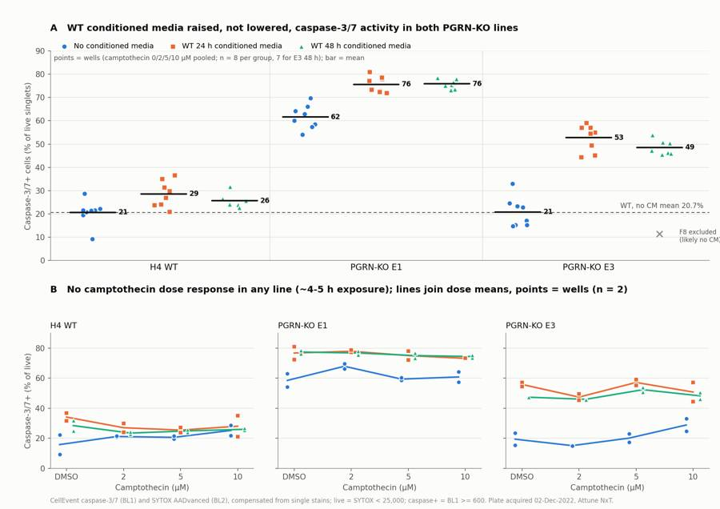
156
agent
The F8 annotation is clipped at the right edge; I'll move it to the left of the marker.
157
tool call · Bash
cd /task/work; sed -i "s/ax.annotate(f'{r.name} excluded\\\\n(likely no CM)',(x0,r.casp),xytext=(x0+0.28,r.casp-1),fontsize=8,color=INK2,va='center')/ax.annotate(f'{r.name} excluded (profile\\\\nmatches no-CM E3)',(x0,r.casp),xytext=(x0-0.22,r.casp),fontsize=8,color=INK2,va='center',ha='right')/" figure.py; grep -n "annotate" figure.py; python3 figure.py158
tool output
26: ax.annotate(f'{r.name} excluded (profile\nmatches no-CM E3)',(x0,r.casp),xytext=(x0-0.22,r.casp),fontsize=8,color=INK2,va='center',ha='right')159
tool call · Read
{
"file_path": "/task/outputs/figure.png"
}160
tool output
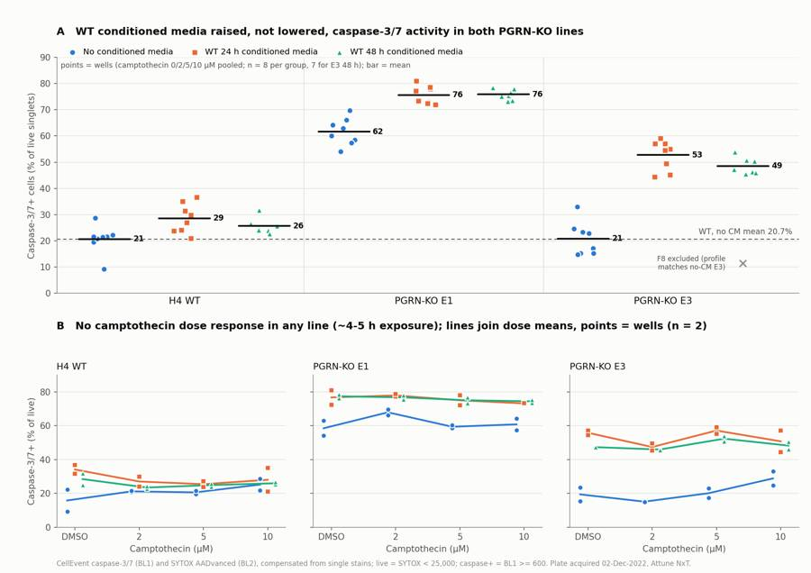
162
agent
Figure looks clean. Let me also save a gating-strategy overview image for the report and pull a few remaining numbers.
163
tool call · Bash
cd /task/work; python3 plot_gates.py 25000 600 G1,G8,A12,B12,C12,C1 /task/outputs/gating_overview.png; python3 - <<'EOF'
import pandas as pd
w=pd.read_csv('perwell_final.csv',index_col=0)
print(w.loc[['G1','G2','G7','G8','G3','G4','G5','G6'],['all_events','singlets','live','casp','dead','casp_all']].round(2))
print('events range', w.all_events.min(), w.all_events.idxmin(), w.all_events.max(), w.all_events.idxmax())
print('live range', w.live.min(), w.live.idxmin(), w.live.max())
s=pd.read_csv('survey.csv'); print('vol', s.vol.min(), s.vol.max(), 'tmax', s.tmax.min(), s.tmax.max(), s.btim.iloc[0], s.etim.iloc[-1])
d=w[w.row.isin(list('ABCDEF'))&w.used]
print(d.groupby(['cell_line','cm'])[['dead','casp_all']].agg(['mean','std']).round(1))
EOF164
tool output
all_events singlets live casp dead casp_all
well
G1 26210 23744 23744 0.23 0.00 0.23
G2 24654 21352 20135 3.62 5.70 7.92
G7 24019 21275 21275 4.55 0.00 4.55
G8 24323 21887 21390 0.30 2.27 0.30
G3 35885 29980 28013 5.58 6.56 11.34
G4 34209 28502 26639 5.81 6.54 11.61
G5 15961 11630 11276 7.61 3.04 10.24
G6 16761 12455 11783 6.90 5.40 11.51
events range 11614 F1 47337 A3
live range 3549 F4 28013
vol 131000 142000 tmax 0.01566 0.0168509999999999 14:33:37 15:32:30
dead casp_all
mean std mean std
cell_line cm
E1 CM24 20.7 6.4 80.6 3.2
CM48 19.8 5.5 80.6 1.9
noCM 7.6 2.5 64.6 4.5
E3 CM24 19.5 5.9 62.0 4.5
CM48 16.8 6.5 57.2 3.7
noCM 8.2 4.4 27.2 7.5
WT CM24 10.5 2.3 35.7 6.3
CM48 11.4 3.2 33.8 4.5
noCM 12.1 1.2 30.0 5.4166
agent
All numbers are in hand. Now writing `answer.json`.
167
tool call · Bash
cd /task/work; cat > answer.py <<'EOF'
import json, pandas as pd
C=pd.read_csv('comparisons.csv'); C=C[C.metric=='casp'].set_index(['a','b'])
S=pd.read_csv('/task/outputs/condition_summary.csv').set_index('condition')
def mag(a,b):
r=C.loc[(a,b)]
return f"{r['diff']:+.1f} percentage points of live singlets (caspase-3/7+ %: {r.mean_a:.1f}% -> {r.mean_b:.1f}%; Welch 95% CI {r.ci_lo:+.1f} to {r.ci_hi:+.1f}; n = {int(r.nA)} vs {int(r.nB)} wells; ranges {r.ranges}%)"
comps=[
('PGRN-KO E1 vs WT baseline (no conditioned media)','WT_noCM','E1_noCM','increase','high'),
('PGRN-KO E3 vs WT baseline (no conditioned media)','WT_noCM','E3_noCM','no_clear_change','medium'),
('E1: WT conditioned media (24 h + 48 h) vs no conditioned media','E1_noCM','E1_CMany','increase','high'),
('E1: WT 24 h conditioned media vs no conditioned media','E1_noCM','E1_CM24','increase','high'),
('E1: WT 48 h conditioned media vs no conditioned media','E1_noCM','E1_CM48','increase','high'),
('E3: WT conditioned media (24 h + 48 h) vs no conditioned media','E3_noCM','E3_CMany','increase','high'),
('E3: WT 24 h conditioned media vs no conditioned media','E3_noCM','E3_CM24','increase','high'),
('E3: WT 48 h conditioned media vs no conditioned media','E3_noCM','E3_CM48','increase','high'),
('WT: WT conditioned media (24 h + 48 h) vs no conditioned media','WT_noCM','WT_CMany','increase','low'),
('Rescue test: E1 + WT conditioned media vs WT level (WT, no conditioned media)','WT_noCM','E1_CMany','increase','high'),
('Rescue test: E3 + WT conditioned media vs WT level (WT, no conditioned media)','WT_noCM','E3_CMany','increase','high'),
('E1: 48 h vs 24 h conditioned media','E1_CM24','E1_CM48','no_clear_change','low'),
('E3: 48 h vs 24 h conditioned media','E3_CM24','E3_CM48','no_clear_change','low'),
('WT: camptothecin 10 uM vs DMSO (all media pooled)','WT_allmedia_DMSO','WT_allmedia_CPT10','no_clear_change','medium'),
('E1: camptothecin 10 uM vs DMSO (all media pooled)','E1_allmedia_DMSO','E1_allmedia_CPT10','no_clear_change','medium'),
('E3: camptothecin 10 uM vs DMSO (all media pooled)','E3_allmedia_DMSO','E3_allmedia_CPT10','no_clear_change','medium'),
]
out={"question":"Can WT progranulin-conditioned media (24 h or 48 h) bring caspase-3/7 activity in H4 PGRN-KO lines E1 and E3 back toward H4 WT levels?",
"comparisons":[dict(comparison=c,a=a,b=b,direction=d,magnitude=mag(a,b),confidence=cf) for c,a,b,d,cf in comps],
"overall_answer":"no: WT-conditioned media did not move caspase-3/7 activity in either PGRN-KO line toward WT; it increased it. The caspase-3/7+ fraction of live singlets rose from 61.6% to 75.8% in E1 (+14.1 points) and from 20.8% to 50.8% in E3 (+30.0 points), while WT moved only from 20.7% to 27.1% (+6.5 points), so the KO-WT gap widened (E1 +40.9 -> +48.6 points; E3 +0.2 -> +23.7 points vs WT under the same media). E3 without conditioned media was already at the WT level in this run, so there was no E3 excess to rescue. Camptothecin (2-10 uM, ~4-5 h) gave no dose response, so the challenge arm could not be assessed.",
"assay_verdict":"needs_optimisation",
"next_action":"repeat_with_change",
"next_change":{"what":"Conditioned-media control arm (source of the spent media)",
"from":"WT-conditioned media (24 h / 48 h; PGRN content not measured) compared only with fresh H4 media",
"to":"WT-conditioned media side by side with PGRN-KO (E1 and E3)-conditioned media collected at the same seeding density and conditioning time, plus cell-free media incubated 24/48 h at 37 C, with PGRN in every batch confirmed by ELISA before use",
"why":"Conditioned media raised caspase-3/7+ (E1 +14.1, E3 +30.0 points) and SYTOX-bright death (E1 7.6% -> 20.2%, E3 8.2% -> 18.3% of singlets) in the KO lines but barely changed WT (+6.5 points caspase, -1.1 points death), which points to spent-media stress, not a PGRN effect. Only a PGRN-null spent-media control at matched conditioning can separate a PGRN-specific rescue from that artefact. Measuring PGRN in each batch also confirms that the WT media contain it."},
"excluded_wells":["F8","G3","G4","G5","G6"],
"caveats":[
"No PGRN-free spent-media control (KO-conditioned or cell-free incubated media) and no PGRN measurement in the conditioned media, so the conditioned-media effect cannot be attributed to progranulin.",
"The camptothecin challenge failed: no dose response in any line (10 uM vs DMSO: WT +0.3, E1 -1.4, E3 +3.1 points; ~4-5 h exposure before staining), so the CPT-enhanced KO phenotype the plan relied on was not reproduced.",
"The notebook's conditioned-media maps disagree: the 2022-11-30 map highlights rows A-C as 24 h and D-F as 48 h, but the 2022-12-02 map highlights columns 1-4 as 24 h and 5-8 as 48 h. The 2022-11-28 producer map also puts the 48 h (green) highlight on the E1/E3 rows. The CM vs no-CM contrast (columns 1-8 vs 9-12) holds under either reading; the 24 h vs 48 h contrast cannot be interpreted (no difference was seen under either reading).",
"Row-G untreated KO controls look mislabelled: G5/G6 ('E1') have the E3 scatter fingerprint and G3/G4 ('E3') do not, so all four were excluded. F8 (E3, 48 h CM) was excluded because its profile matches no-CM E3 (11.5% vs replicate C8 47.3%). D12 (WT no-CM, 9.3%) is a low outlier that was kept; without it the WT no-CM mean is 22.3% instead of 20.7%.",
"There are no unstained or single-stain controls for E1/E3; thresholds were set on WT controls. KO-line autofluorescence (for example lysosomal/lipofuscin-like signal in PGRN-deficient cells) cannot be ruled out, especially in E1, where caspase-3/7 signal is a continuum rather than a discrete peak. The absolute E1 level depends on the threshold (41-71% no-CM across the thresholds tested), but the direction of the CM effect held in all 9 threshold combinations.",
"Caspase-3/7+ cells are SYTOX-dim. The live gate sits at the dim/bright SYTOX valley (compensated BL2 < 25,000), so 'live' includes SYTOX-dim apoptotic cells. CellEvent spi
… [1,160 more characters not shown]168
tool output
{
"question": "Can WT progranulin-conditioned media (24 h or 48 h) bring caspase-3/7 activity in H4 PGRN-KO lines E1 and E3 back toward H4 WT levels?",
"comparisons": [
{
"comparison": "PGRN-KO E1 vs WT baseline (no conditioned media)",
"a": "WT_noCM",
"b": "E1_noCM",
"direction": "increase",
"magnitude": "+40.9 percentage points of live singlets (caspase-3/7+ %: 20.7% -> 61.6%; Welch 95% CI +35.4 to +46.5; n = 8 vs 8 wells; ranges 9.3-28.7 vs 54.0-69.7%)",
"confidence": "high"
},
{
"comparison": "PGRN-KO E3 vs WT baseline (no conditioned media)",
"a": "WT_noCM",
"b": "E3_noCM",
"direction": "no_clear_change",
"magnitude": "+0.2 percentage points of live singlets (caspase-3/7+ %: 20.7% -> 20.8%; Welch 95% CI -6.1 to +6.5; n = 8 vs 8 wells; ranges 9.3-28.7 vs 14.9-32.9%)",
"confidence": "medium"
},
{
"comparison": "E1: WT conditioned media (24 h + 48 h) vs no conditioned media",
"a": "E1_noCM",
"b": "E1_CMany",
"direction": "increase",
"magnitude": "+14.1 percentage points of live singlets (caspase-3/7+ %: 61.6% -> 75.8%; Welch 95% CI +9.8 to +18.5; n = 8 vs 16 wells; ranges 54.0-69.7 vs 72.0-81.0%)",
"confidence": "high"
},
{
"comparison": "E1: WT 24 h conditioned media vs no conditioned media",
"a": "E1_noCM",
"b": "E1_CM24",
"direction": "increase",
"magnitude": "+14.1 percentage points of live singlets (caspase-3/7+ %: 61.6% -> 75.7%; Welch 95% CI +9.4 to +18.7; n = 8 vs 8 wells; ranges 54.0-69.7 vs 72.0-81.0%)",
"confidence": "high"
},
{
"comparison": "E1: WT 48 h conditioned media vs no conditioned media",
"a": "E1_noCM",
"b": "E1_CM48",
"direction": "increase",
"magnitude": "+14.2 percentage points of live singlets (caspase-3/7+ %: 61.6% -> 75.8%; Welch 95% CI +9.9 to +18.6; n = 8 vs 8 wells; ranges 54.0-69.7 vs 73.2-78.4%)",
"confidence": "high"
},
{
"comparison": "E3: WT conditioned media (24 h + 48 h) vs no conditioned media",
"a": "E3_noCM",
"b": "E3_CMany",
"direction": "increase",
"magnitude": "+30.0 percentage points of live singlets (caspase-3/7+ %: 20.8% -> 50.8%; Welch 95% CI +24.3 to +35.6; n = 8 vs 15 wells; ranges 14.9-32.9 vs 44.4-59.1%)",
"confidence": "high"
},
{
"comparison": "E3: WT 24 h conditioned media vs no conditioned media",
"a": "E3_noCM",
"b": "E3_CM24",
"direction": "increase",
"magnitude": "+31.9 percentage points of live singlets (caspase-3/7+ %: 20.8% -> 52.7%; Welch 95% CI +25.5 to +38.4; n = 8 vs 8 wells; ranges 14.9-32.9 vs 44.4-59.1%)",
"confidence": "high"
},
{
"comparison": "E3: WT 48 h conditioned media vs no conditioned media",
"a": "E3_noCM",
"b": "E3_CM48",
"direction": "increase",
"magnitude": "+27.7 percentage points of live singlets (caspase-3/7+ %: 20.8% -> 48.6%; Welch 95% CI +22.1 to +33.4; n = 8 vs 7 wells; ranges 14.9-32.9 vs 45.5-53.9%)",
"confidence": "high"
},
{
"comparison": "WT: WT conditioned media (24 h + 4170
agent
Now the report.
171
tool call · Write
{
"file_path": "/task/outputs/report.md",
"content": "# Caspase-3/7 conditioned-media plate, H4 WT / PGRN-KO E1, E3 (acquired 02-Dec-2022)\n\n## Question\nCan WT progranulin-conditioned media (CM; harvested from H4 WT cells after 24 h or 48 h) bring caspase-3/7 activity in the H4 PGRN-KO lines E1 and E3 back toward H4 WT levels? Camptothecin (CPT; 2, 5, 10 \u00b5M vs DMSO) was added as an apoptotic challenge, because the earlier experiment found that CPT enhanced the KO\u2013WT difference.\n\n## Methods\n**Data.** 80 FCS 3.1 files from the Attune NxT: wells A1\u2013F12 and G1\u2013G8, 11,614\u201347,337 events each, about 16\u201317 s and 131\u2013142 \u00b5L per well, acquired 14:33\u201315:32. Event rate over time was smooth in every well, with no clog or ran-dry signature.\n\n**Channel identity.** The `$PnS` labels are stale (BL1 = \"AAV-GFP-GFP\", BL2 = \"AAdvanced livedead\"). I followed the plan's reagent list and cytometer settings: **BL1-A = CellEvent Caspase-3/7 Green** and **BL2-A = SYTOX AADvanced dead-cell stain**. The voltages in the files match the plan (FSC 20, SSC 290, BL1 225, BL2 350).\n\n**Compensation.** The file spillover matrix is the identity, so I estimated a matrix from the WT single stains:\n- G7 (CellEvent only), BL1-bright events: BL1\u2192BL2 spillover = **0.88**. SYTOX AADvanced is read in BL2 (590/40) at 350 V, so CellEvent spills heavily into it.\n- G8 (SYTOX only), BL2-bright events: BL2\u2192BL1 spillover = **0.0005**.\n\nThe matrix (`spill_G7G8`) is stored in `gates.xml` and used by all fluorescence gates. After compensation, G7 caspase+ events sit at negative-level BL2.\n\n**Gating.** One FlowKit 1.2.3 strategy for all wells (`gates.xml`); counts in `counts.csv` come from `gate_sample` on the reloaded XML. Linear axes throughout:\n1. `cells` (role: cells): polygon on FSC-A \u00d7 SSC-A, vertices (100k,40k) (100k,700k) (380k,1.04M) (1.04M,1.04M) (1.04M,60k) (300k,60k). It removes debris (FSC-A < 10^5.05, the minimum of the pooled FSC histogram) and events off scale at \u2265 1,040,000.\n2. `singlets` (role: singlets): polygon on FSC-A \u00d7 FSC-H, following the main diagonal and dropping the low FSC-H/FSC-A tail. Lower edge (100k,40k) (300k,125k) (600k,235k) (1.04M,360k). Keeps 82\u201397% of cells.\n3. `live` (role: live): compensated BL2-A (SYTOX) < 25,000, which is the valley between the SYTOX-dim and SYTOX-bright (dead) clusters. Caspase+ cells are SYTOX-dim, so this is \"not SYTOX-bright\".\n4. `casp_pos` (role: marker_positive), inside `live`: compensated BL1-A \u2265 600. The FMO-type controls give 0.30% (G8, SYTOX-only) and 0.23% (G1, unstained) above this threshold; the 99.5th percentile of G8 is 474.\n5. `dead` (other) = singlets with compensated BL2 \u2265 25,000. `casp_pos_all` (other) = singlets with compensated BL1 \u2265 600, regardless of SYTOX.\n\nThe gating was checked against an independent NumPy implementation (identical counts) and on overlay plots for every cell line (`gating_overview.png`).\n\n**Per-well metric.** % caspase-3/7+ of live singlets = 100 \u00d7 `casp_pos` / `live`. Unit: % of parent. No normalisation.\n\n**Grouping and statistics.** CPT had no detectable effect in any line (CM-centred one-way ANOVA across the four doses: WT p = 0.64, E1 p = 0.07, E3 p = 0.05, with non-monotonic patterns). So the main groups are cell line \u00d7 media, pooled over the four CPT/DMSO wells in each of the two replicate rows (n = 8 wells; n = 7 for E3 48 h after excluding F8). I compared groups by difference in means with Welch 95% CIs and checked them at the replicate-row level (n = 2 rows). Per-dose groups (n = 2) and controls are also listed in `condition_summary.csv`.\n\n**QC** (`flags.csv`):\n- **Line identity.** I checked it with a scatter fingerprint of caspase-negative live singlets: quartiles of FSC-A, SSC-A, SSC-W and FSC-W, SSC/FSC, and % off-scale. A nearest-centroid classifier was trained on rows A\u2013F. It separates E3 cleanly; WT and E1 overlap.\n- **Saturation.** Wells with \u2265 5% of events off scale on FSC-A or SSC-A are flagged.\n- **Outliers.** Replicate-discordant wells were examined against independent features.\n\n## Results\n**Caspase-3/7+ % of live singlets** (mean \u00b1 SD across wells; CPT doses pooled):\n\n| Line | No CM | WT 24 h CM | WT 48 h CM | CM pooled | CM \u2212 no CM (95% CI) |\n|---|---|---|---|---|---|\n| WT | 20.7 \u00b1 5.3 (n=8) | 28.6 \u00b1 5.6 (8) | 25.7 \u00b1 2.7 (8) | 27.1 \u00b1 4.5 (16) | +6.5 (+1.7 to +11.3) |\n| E1 | 61.6 \u00b1 5.1 (8) | 75.7 \u00b1 3.4 (8) | 75.8 \u00b1 1.9 (8) | 75.8 \u00b1 2.7 (16) | **+14.1 (+9.8 to +18.5)** |\n| E3 | 20.8 \u00b1 6.3 (8) | 52.7 \u00b1 5.7 (8) | 48.6 \u00b1 3.2 (7) | 50.8 \u00b1 5.0 (15) | **+30.0 (+24.3 to +35.6)** |\n\n- **Baseline KO phenotype.** E1 was far above WT without CM: +40.9 points (95% CI +35.4 to +46.5), with no overlap between wells. E3 was not different from WT: +0.2 (\u22126.1 to +6.5). So in this run only E1 showed the elevated-caspase phenotype.\n- **Effect of WT CM.** CM did not reduce caspase activity in either KO line; it raised it. Every E1 CM well (72.0\u201381.0%) and every E3 CM well (44.4\u201359.1%) was above every no-CM well of the same line (E1 54.0\u201369.7%, E3 14.9\u201332.9%). Both replicate rows agree: E1 74.1/77.4 vs 61.2/62.0; E3 52.6/48.8 vs 20.1/21.5. WT moved only slightly, with overlapping ranges: rows 24.7/29.6 vs 21.1/20.3.\n- **Distance from WT.** With CM, E1 sat +55.1 points and E3 +30.1 points above WT no-CM. Against WT under the same CM, the KO\u2013WT gap widened from +40.9 to +48.6 points (E1) and from +0.2 to +23.7 points (E3).\n- **Cell death followed the same pattern.** SYTOX-bright dead % of singlets: E1 7.6 \u2192 20.2, E3 8.2 \u2192 18.3, WT 12.1 \u2192 11.0. Total caspase+ % of singlets: E1 64.6 \u2192 80.6, E3 27.2 \u2192 59.8, WT 30.0 \u2192 34.8.\n- **24 h vs 48 h CM.** No difference: E1 +0.2, E3 \u22124.2 (\u22129.3 to +1.0), WT \u22123.0 points.\n- **Camptothecin.** 10 \u00b5M vs D
… [7,196 more characters not shown]172
tool output
File created successfully at: /task/outputs/report.md (file state is current in your context — no need to Read it back)
174
agent
Let me run a final validation pass over all deliverables against the spec.
175
tool call · Bash
cd /task/outputs; ls -la; head -3 counts.csv; head -3 condition_summary.csv | cut -c1-250; grep -E "^WT_untreated" condition_summary.csv | cut -c1-120; python3 - <<'EOF'
import pandas as pd, json, flowkit as fk
c=pd.read_csv('counts.csv'); f=pd.read_csv('flags.csv'); s=pd.read_csv('condition_summary.csv'); a=json.load(open('answer.json'))
assert list(c.columns)==['file','well','population','role','parent','count','pct_of_parent']
assert list(f.columns)==['file','well','issue_type','evidence','decision']
assert list(s.columns)==['condition','wells','n_wells_used','mean','sd','metric_definition','normalisation_applied']
assert c.groupby('file').population.apply(lambda x: tuple(sorted(x))).nunique()==1 and c.file.nunique()==80
for r in ['cells','singlets','live','marker_positive']: assert c[c.role==r].population.nunique()==1
ae=c[c.population=='all_events']; assert (ae.role=='other').all() and (ae.parent=='none').all() and ae.pct_of_parent.isna().all()
# pct check
cc=c.set_index(['well','population'])['count']
x=c[c.population!='all_events']; calc=[100*cc[(r.well,r.population)]/cc[(r.well,r.parent)] for r in x.itertuples()]
assert (abs(x.pct_of_parent.values-pd.Series(calc).values)<1e-3).all()
assert len(f)==80 and f.issue_type.isin(['none','clog','ran_dry','too_few_events','saturation','bad_control','mislabel','other']).all()
assert f.decision.isin(['keep','keep_with_note','exclude']).all() and (f[f.issue_type=='none'].decision=='keep').all()
assert f[f.issue_type!='none'].evidence.notna().all()
assert set(a['excluded_wells'])==set(f[f.decision=='exclude'].well)
conds=set(s.condition)
for cmp in a['comparisons']: assert cmp['a'] in conds and cmp['b'] in conds and cmp['direction'] in ['increase','decrease','no_clear_change'] and cmp['confidence'] in ['high','medium','low']
assert a['overall_answer'].split(':')[0] in ['yes','partial','no']
assert a['next_action'] in ['proceed_as_planned','repeat_unchanged','repeat_with_change','optimise_reagent_or_setting','change_treatment_or_timing','switch_assay','stop']
assert a['assay_verdict'] in ['fit_for_purpose','needs_optimisation','not_fit_for_purpose']
# excluded wells absent from summary wells
used=set(';'.join(s.wells).split(';')); assert not used & set(a['excluded_wells'])
assert (s[s.n_wells_used==1].sd.isna()).all()
# summary means reproduce from counts
w=c.pivot(index='well',columns='population',values='count'); m=100*w.casp_pos/w.live
for r in s.itertuples():
ws=r.wells.split(';'); assert len(ws)==r.n_wells_used and abs(m[ws].mean()-r.mean)<1e-2
g=fk.parse_gating_xml('gates.xml'); print('gates', g.get_gate_ids())
# report headings
rep=open('report.md').read(); hs=[l for l in rep.splitlines() if l.startswith('## ')]; print(hs)
print('ALL CHECKS PASSED')
EOF176
tool output
total 584
drwxr-xr-x 2 root root 4096 Nov 10 17:25 .
drwxr-xr-x 5 root root 4096 Nov 10 17:09 ..
-rw-r--r-- 1 root root 10424 Nov 10 17:24 answer.json
-rw-r--r-- 1 root root 18642 Nov 10 17:21 condition_summary.csv
-rw-r--r-- 1 root root 45092 Nov 10 17:19 counts.csv
-rw-r--r-- 1 root root 202208 Nov 10 17:23 figure.png
-rw-r--r-- 1 root root 11140 Nov 10 17:22 flags.csv
-rw-r--r-- 1 root root 4577 Nov 10 17:19 gates.xml
-rw-r--r-- 1 root root 265303 Nov 10 17:23 gating_overview.png
-rw-r--r-- 1 root root 12754 Nov 10 17:25 report.md
file,well,population,role,parent,count,pct_of_parent
Caspase-assay-2-mlk_caspase_Group_A1.fcs,A1,all_events,other,none,31328,
Caspase-assay-2-mlk_caspase_Group_A1.fcs,A1,cells,cells,all_events,20093,64.1375
condition,wells,n_wells_used,mean,sd,metric_definition,normalisation_applied
WT_noCM,A9;A10;A11;A12;D9;D10;D11;D12,8,20.663,5.347,"% CellEvent caspase-3/7-positive cells among live singlets = 100 x count(casp_pos: compensated BL1-A >= 600) / count(live: compensated BL2-A SYTOX AADvanced < 25000, within cells>singlets); unit:
WT_CM24,A1;A2;A3;A4;D1;D2;D3;D4,8,28.614,5.642,"% CellEvent caspase-3/7-positive cells among live singlets = 100 x count(casp_pos: compensated BL1-A >= 600) / count(live: compensated BL2-A SYTOX AADvanced < 25000, within cells>singlets); unit: % of p
WT_untreated_stained,G2,1,3.621,,"% CellEvent caspase-3/7-positive cells among live singlets = 100 x count(casp_pos: com
gates [('cells', ('root',)), ('singlets', ('root', 'cells')), ('live', ('root', 'cells', 'singlets')), ('casp_pos', ('root', 'cells', 'singlets', 'live')), ('dead', ('root', 'cells', 'singlets')), ('casp_pos_all', ('root', 'cells', 'singlets'))]
['## Question', '## Methods', '## Results', '## Conclusion', '## Caveats', '## Recommendation']
ALL CHECKS PASSED178
agent
All checks pass. One last check that no personal metadata from the FCS headers (the operator field) leaked into the outputs:
179
tool call · Bash
cd /task/outputs; grep -il "jeff\|huang" * || echo "no operator name in outputs"
180
tool output
no operator name in outputs
182
agent
**No: WT-conditioned media did not bring caspase activity in E1 or E3 back toward WT; it raised it.** All deliverables are in `/task/outputs/` and pass a check against your spec. `counts.csv` was produced from the reloaded `gates.xml` and matches an independent re-gating exactly.
**Results** (% caspase-3/7+ of live singlets, camptothecin doses pooled, n = 8 wells per group):
| Line | No conditioned media | With conditioned media | Change (95% CI) |
|---|---|---|---|
| WT | 20.7% | 27.1% | +6.5 points (+1.7 to +11.3) |
| E1 | 61.6% | 75.8% | **+14.1 points** (+9.8 to +18.5) |
| E3 | 20.8% | 50.8% | **+30.0 points** (+24.3 to +35.6) |
- **Gap to WT widened.** With conditioned media, E1 moved from 40.9 to 48.6 points above WT and E3 from 0.2 to 23.7. Dead-cell fraction also rose in E1 and E3 (by about 10–13 points) but not in WT.
- **Likely cause.** The pattern looks like stress from spent media rather than a progranulin effect. The design has no progranulin-free spent-media control, so that can't be separated.
- **E3 had no excess to rescue.** Without conditioned media it was already at the WT level in this run.
- **Camptothecin did nothing.** There was no dose response in any line (10 µM vs DMSO: within ±3 points). It was only on the cells for about 4–5 h, so the challenge arm can't be assessed.
- **24 h vs 48 h media:** no difference.
- **Robustness:** the direction of every result held across 9 gate-threshold combinations, an alternative metric, and including off-scale events.
**Data issues that changed the analysis:**
- **Stale channel labels.** BL1 is labelled "AAV-GFP" in the files. I treated it as the caspase stain and BL2 as the live/dead stain, per the plan. The caspase stain spills 88% into BL2, so I built a compensation matrix from the G7/G8 single stains.
- **Row-G untreated knockout controls look mislabelled (excluded).** G5/G6 ("E1") have E3's scatter profile; G3/G4 ("E3") don't. A swap is likely, but scatter can't tell whether G3/G4 are WT or E1.
- **F8 excluded.** It reads 11.5% against 47.3% in its replicate, and its profile matches an E3 well without conditioned media (possibly not applied).
- **D12 kept with a note.** It is a low outlier (9.3%) with no technical fault found; removing it doesn't change any conclusion.
- **Ten E3 wells flagged for saturation.** 5–10% of their events are off scale on side scatter, which biases their read-out low by about 1–5 points.
- **Plate maps disagree on which wells got 24 h vs 48 h media** (rows on 11-30, columns on 12-02). This doesn't affect the with/without comparison but makes 24 h vs 48 h uninterpretable.
**Verdict and next step:** the assay needs optimisation; repeat with a change. The main change is to run WT-conditioned media alongside media conditioned by E1/E3 cells (same density and time), plus cell-free incubated media, and confirm progranulin in each batch by ELISA. Also:
- give camptothecin 16–24 h;
- add unstained and single-stain controls for each line;
- lower side scatter to about 250 V;
- fix the plate-map labels;
- run independent replicate plates.
One extra file beyond the spec: `gating_overview.png`, which shows the gates on representative wells.
Files are in `/task/outputs/`:
- `gates.xml`
- `counts.csv`
- `flags.csv`
- `condition_summary.csv`
- `figure.png`
- `report.md`
- `answer.json`
- `gating_overview.png`
final result
**No: WT-conditioned media did not bring caspase activity in E1 or E3 back toward WT; it raised it.** All deliverables are in `/task/outputs/` and pass a check against your spec. `counts.csv` was produced from the reloaded `gates.xml` and matches an independent re-gating exactly.
**Results** (% caspase-3/7+ of live singlets, camptothecin doses pooled, n = 8 wells per group):
| Line | No conditioned media | With conditioned media | Change (95% CI) |
|---|---|---|---|
| WT | 20.7% | 27.1% | +6.5 points (+1.7 to +11.3) |
| E1 | 61.6% | 75.8% | **+14.1 points** (+9.8 to +18.5) |
| E3 | 20.8% | 50.8% | **+30.0 points** (+24.3 to +35.6) |
- **Gap to WT widened.** With conditioned media, E1 moved from 40.9 to 48.6 points above WT and E3 from 0.2 to 23.7. Dead-cell fraction also rose in E1 and E3 (by about 10–13 points) but not in WT.
- **Likely cause.** The pattern looks like stress from spent media rather than a progranulin effect. The design has no progranulin-free spent-media control, so that can't be separated.
- **E3 had no excess to rescue.** Without conditioned media it was already at the WT level in this run.
- **Camptothecin did nothing.** There was no dose response in any line (10 µM vs DMSO: within ±3 points). It was only on the cells for about 4–5 h, so the challenge arm can't be assessed.
- **24 h vs 48 h media:** no difference.
- **Robustness:** the direction of every result held across 9 gate-threshold combinations, an alternative metric, and including off-scale events.
**Data issues that changed the analysis:**
- **Stale channel labels.** BL1 is labelled "AAV-GFP" in the files. I treated it as the caspase stain and BL2 as the live/dead stain, per the plan. The caspase stain spills 88% into BL2, so I built a compensation matrix from the G7/G8 single stains.
- **Row-G untreated knockout controls look mislabelled (excluded).** G5/G6 ("E1") have E3's scatter profile; G3/G4 ("E3") don't. A swap is likely, but scatter can't tell whether G3/G4 are WT or E1.
- **F8 excluded.** It reads 11.5% against 47.3% in its replicate, and its profile matches an E3 well without conditioned media (possibly not applied).
- **D12 kept with a note.** It is a low outlier (9.3%) with no technical fault found; removing it doesn't change any conclusion.
- **Ten E3 wells flagged for saturation.** 5–10% of their events are off scale on side scatter, which biases their read-out low by about 1–5 points.
- **Plate maps disagree on which wells got 24 h vs 48 h media** (rows on 11-30, columns on 12-02). This doesn't affect the with/without comparison but makes 24 h vs 48 h uninterpretable.
**Verdict and next step:** the assay needs optimisation; repeat with a change. The main change is to run WT-conditioned media alongside media conditioned by E1/E3 cells (same density and time), plus cell-free incubated media, and confirm progranulin in each batch by ELISA. Also:
- give camptothecin 16–24 h;
- add unstained and single-stain controls for each line;
- lower side scatter to about 250 V;
- fix the plate-map labels;
- run independent replicate plates.
One extra file beyond the spec: `gating_overview.png`, which shows the gates on representative wells.
Files are in `/task/outputs/`:
- `gates.xml`
- `counts.csv`
- `flags.csv`
- `condition_summary.csv`
- `figure.png`
- `report.md`
- `answer.json`
- `gating_overview.png`